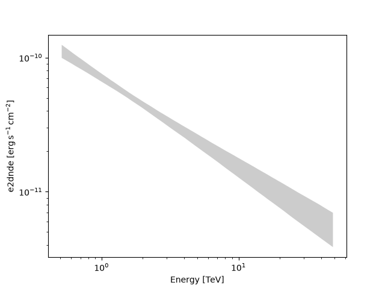

Note
Go to the end to download the full example code or to run this example in your browser via Binder.
Bayesian analysis with nested sampling#
A demonstration of a Bayesian analysis using the nested sampling technique.
Context#
1. Bayesian analysis#
Bayesian inference uses prior knowledge, in the form of a prior distribution, in order to estimate posterior probabilities which we traditionally visualise in the form of corner plots. These distributions contain more information than a maximum likelihood fit as they reveal not only the “best model” but provide a more accurate representation of errors and correlation between parameters. In particular, non-Gaussian degeneracies are complex to estimate with a maximum likelihood approach.
2. Limitations of the Markov Chain Monte Carlo approach#
A well-known approach to estimate this posterior distribution is the Markov Chain Monte Carlo (MCMC). This uses an ensemble of walkers to produce a chain of samples that after a convergence period will reach a stationary state. Once convergence is reached, the successive elements of the chain are samples of the target posterior distribution. However, the weakness of the MCMC approach lies in the “Once convergence” part. If the walkers are started far from the best likelihood region, the convergence time can be long or never reached if the walkers fall in a local minima. The choice of the initialisation point can become critical for complex models with a high number of dimensions and the ability of these walkers to escape a local minimum or to accurately describe a complex likelihood space is not guaranteed.
3. Nested sampling approach#
To overcome these issues, the nested sampling (NS) algorithm has gained traction in physics and astronomy. It is a Monte Carlo algorithm for computing an integral of the likelihood function over the prior model parameter space introduced in Skilling, 2004. The method performs this integral by evolving a collection of points through the parameter space (see recent reviews from Ashton et al., 2022, and Buchner, 2023). Without going into too many details, one important specificity of the NS method is that it starts from the entire parameter space and evolves a collection of live points to map all minima (including multiple modes if any), whereas Markov Chain Monte Carlo methods require an initialisation point and the walkers will explore the local likelihood. The ability of these walkers to escape a local minimum or to accurately describe a complex likelihood space is not guaranteed. This is a fundamental difference with MCMC or Minuit which will only ever probe the vicinity along their minimisation paths and do not have an overview of the global likelihood landscape. The analysis using the NS framework is more CPU time consuming than a standard classical fit, but it provides the full posterior distribution for all parameters, which is out of reach with traditional fitting techniques (N*(N-1)/2 contour plots to generate). In addition, it is more robust to the choice of initialisation, requires less human intervention and is therefore readily integrated in pipeline analysis. In Gammapy, we provide several NS backends: UltraNest and Nautilus. UltraNest is a package that implements the NS algorithm and is used in many astrophysical applications. Nautilus is a more recent implementation of the NS algorithm that exploits neural networks to learn a likelihood function emulator to propose new live points. It is designed to be faster and more efficient than UltraNest, especially for high-dimensional problems. For a nice visualisation of the NS method see here: sampling visualisation. And for a tutorial of UltraNest applied to X-ray fitting with concrete examples and questions see: BXA Tutorial.
See the UltraNest docs here). Note: please cite UltraNest if used for a paper If you are using the “UltraNest” library for a paper, please follow its citation scheme: Cite UltraNest.
See the Nautilus docs here). Note: please cite Nautilus if used for a paper If you are using the “Nautilus” library for a paper, please follow its citation scheme: Cite Nautilus.
Proposed approach#
In this example, we will perform a Bayesian analysis with multiple 1D spectra of the Crab nebula data and investigate their posterior distributions.
Setup#
As usual, we’ll start with some setup …
import matplotlib.pyplot as plt
import numpy as np
import astropy.units as u
from gammapy.datasets import Datasets
from gammapy.datasets import SpectrumDatasetOnOff
from gammapy.modeling.models import (
SkyModel,
UniformPrior,
LogUniformPrior,
)
from gammapy.modeling.sampler import Sampler
from gammapy.estimators import FluxCollectionEstimator
from gammapy.visualization import plot_samples_violin_vs_energy
Loading the spectral datasets#
Here we will load a few Crab 1D spectral data for which we will do a fit.
Model definition#
Now we want to define the spectral model that will be fitted to the data. The Crab spectra will be fitted here with a simple powerlaw for simplicity.
model = SkyModel.create(spectral_model="pl", name="crab")
Warning
Priors definition: Unlike a traditional fit where priors on the parameters are optional, here it is inherent to the Bayesian approach and are therefore mandatory.
In this case we will set (min,max) prior that will define the
boundaries in which the sampling will be performed.
Note that it is usually recommended to use a LogUniformPrior for
the parameters that have a large amplitude range like the
amplitude parameter.
A UniformPrior means that the samples will be drawn with uniform
probability between the (min,max) values in the linear or log space
in the case of a LogUniformPrior.
model.spectral_model.amplitude.prior = LogUniformPrior(min=1e-12, max=1e-10)
model.spectral_model.index.prior = UniformPrior(min=1, max=5)
datasets.models = [model]
print(datasets.models)
DatasetModels
Component 0: SkyModel
Name : crab
Datasets names : None
Spectral model type : PowerLawSpectralModel
Spatial model type :
Temporal model type :
Parameters:
index : 2.000 +/- 0.00
amplitude : 1.00e-12 +/- 0.0e+00 1 / (TeV s cm2)
reference (frozen): 1.000 TeV
Defining the sampler and options#
As for the Fit object, the Sampler object can receive
different backends.
The Sampler comes with “reasonable” default parameters, but you can
change them via the options dictionary, using the backend’s own option names.
Gammapy passes each option to the backend sampler constructor or to its run method.
Here is a short description of the most relevant UltraNest options that you
could change:
min_num_live_points: minimum number of live points throughout the run. More points allow to discover multiple peaks if existing, but is slower. To test the Prior boundaries and for debugging, a lower number (~100) can be used before a production run with more points (~400 or more).frac_remain: the cut-off condition for the integration, set by the maximum allowed fraction of posterior mass left in the live points vs the dead points. High values (e.g., 0.5) are faster and can be used if the posterior distribution is a relatively simple shape. A low value (1e-1, 1e-2) is optimal for finding peaks, but slower.log_dir: directory where the output files will be stored. If set to None, no files will be written. If set to a string, a directory will be created containing the ongoing status of the run and final results. For time consuming analysis, it is highly recommended to use that option to monitor the run and restart it in case of a crash (withresume=True).
More information about the UltraNest options can be found in the UltraNest docs.
More information about the Nautilus options can be found in the Nautilus docs.
A few useful options for Nautilus are:
n_live: number of live points. Equivalent ofmin_num_live_pointsin UltraNest. Due to a different methodology the recommended number of live points should be higher than in UltraNest (1000-3000) while still being faster in high-dimensional problems.f_live: fraction of the evidence from live points to use for convergence. Equivalent offrac_remainin UltraNest.pool: Pool used for parallelization of likelihood calls and sampler calculations.filepath: file path with .hdf5 extension (not directory path) where the output files will be stored.
Backend comparison: For a comparison between the two backends methods, see here. For a gamma-ray analysis, current testing shows that UltraNest can be faster (or equivalent) than Nautilus for low-dimensional problems (1-5 parameters) and Nautilus is faster for high-dimensional problems (>10 parameters) but this of course case specific. If your analysis is dominated by likelihood evaluation time, the parallelisation of the likelihood evaluation in Nautilus (using multiprocessing, just setting pool=nCPUs in the sampler options) has a simpler setup than UltraNest (MPI) and can be more efficient on laptops. Notably, multiprocessing with Nautilus can work in a Jupyter notebook while MPI with UltraNest is not supported in a notebook.
Important note: unlike the MCMC method, you don’t need to define the number of steps for which the sampler will run. The algorithm will automatically stop once a convergence criteria has been reached.
Next we can run the sampler on a given dataset. No options are accepted in the run method.
[ultranest] Sampling 400 live points from prior ...
Mono-modal Volume: ~exp(-4.39) * Expected Volume: exp(0.00) Quality: ok
index : +1.0|************************************************| +5.0
amplitude: +1.0e-12|************************************************| +1.0e-10
Z=-inf(0.00%) | Like=-5054.03..-61.81 [-5054.0328..-314.9903] | it/evals=0/401 eff=0.0000% N=400
Z=-542.7(0.00%) | Like=-536.65..-61.81 [-5054.0328..-314.9903] | it/evals=35/436 eff=97.2222% N=400
Z=-538.6(0.00%) | Like=-531.16..-61.81 [-5054.0328..-314.9903] | it/evals=40/441 eff=97.5610% N=400
Z=-520.0(0.00%) | Like=-512.76..-61.81 [-5054.0328..-314.9903] | it/evals=73/476 eff=96.0526% N=400
Z=-513.9(0.00%) | Like=-507.33..-61.81 [-5054.0328..-314.9903] | it/evals=80/484 eff=95.2381% N=400
Mono-modal Volume: ~exp(-4.39) Expected Volume: exp(-0.23) Quality: ok
index : +1.0|************************************************| +5.0
amplitude: +1.0e-12|********************************************** *| +1.0e-10
Z=-493.6(0.00%) | Like=-486.57..-61.81 [-5054.0328..-314.9903] | it/evals=101/506 eff=95.2830% N=400
Z=-473.6(0.00%) | Like=-467.17..-61.81 [-5054.0328..-314.9903] | it/evals=120/528 eff=93.7500% N=400
Z=-441.6(0.00%) | Like=-435.00..-61.81 [-5054.0328..-314.9903] | it/evals=151/566 eff=90.9639% N=400
Z=-434.8(0.00%) | Like=-428.87..-61.81 [-5054.0328..-314.9903] | it/evals=160/576 eff=90.9091% N=400
Mono-modal Volume: ~exp(-4.55) * Expected Volume: exp(-0.45) Quality: ok
index : +1.0|************************************************| +5.0
amplitude: +1.0e-12|********************************************** *| +1.0e-10
Z=-418.7(0.00%) | Like=-412.24..-61.81 [-5054.0328..-314.9903] | it/evals=180/599 eff=90.4523% N=400
Z=-393.0(0.00%) | Like=-386.00..-61.81 [-5054.0328..-314.9903] | it/evals=200/621 eff=90.4977% N=400
Z=-375.0(0.00%) | Like=-368.93..-61.81 [-5054.0328..-314.9903] | it/evals=226/658 eff=87.5969% N=400
Z=-362.3(0.00%) | Like=-352.76..-58.80 [-5054.0328..-314.9903] | it/evals=240/674 eff=87.5912% N=400
Z=-334.6(0.00%) | Like=-327.76..-58.80 [-5054.0328..-314.9903] | it/evals=266/711 eff=85.5305% N=400
Mono-modal Volume: ~exp(-4.55) Expected Volume: exp(-0.67) Quality: ok
index : +1.0| *********************************************| +5.0
amplitude: +1.0e-12| ***********************************************| +1.0e-10
Z=-320.8(0.00%) | Like=-313.18..-58.80 [-314.6900..-172.5640] | it/evals=280/730 eff=84.8485% N=400
Z=-290.4(0.00%) | Like=-283.60..-58.80 [-314.6900..-172.5640] | it/evals=312/767 eff=85.0136% N=400
Z=-281.8(0.00%) | Like=-274.86..-58.80 [-314.6900..-172.5640] | it/evals=320/775 eff=85.3333% N=400
Z=-268.7(0.00%) | Like=-262.22..-58.80 [-314.6900..-172.5640] | it/evals=342/807 eff=84.0295% N=400
Mono-modal Volume: ~exp(-4.88) * Expected Volume: exp(-0.90) Quality: ok
index : +1.0| *******************************************| +5.0
amplitude: +1.0e-12| *********************************************| +1.0e-10
Z=-254.1(0.00%) | Like=-247.49..-58.80 [-314.6900..-172.5640] | it/evals=360/837 eff=82.3799% N=400
Z=-242.1(0.00%) | Like=-235.29..-58.80 [-314.6900..-172.5640] | it/evals=385/874 eff=81.2236% N=400
Z=-234.8(0.00%) | Like=-228.41..-58.80 [-314.6900..-172.5640] | it/evals=400/894 eff=80.9717% N=400
Z=-219.1(0.00%) | Like=-212.87..-58.80 [-314.6900..-172.5640] | it/evals=430/931 eff=80.9793% N=400
Z=-217.0(0.00%) | Like=-211.74..-58.80 [-314.6900..-172.5640] | it/evals=440/943 eff=81.0313% N=400
Mono-modal Volume: ~exp(-5.45) * Expected Volume: exp(-1.12) Quality: ok
index : +1.0| ******************************************| +5.0
amplitude: +1.0e-12| ********************************************| +1.0e-10
Z=-214.0(0.00%) | Like=-207.52..-58.80 [-314.6900..-172.5640] | it/evals=450/961 eff=80.2139% N=400
Z=-203.6(0.00%) | Like=-197.14..-58.80 [-314.6900..-172.5640] | it/evals=478/998 eff=79.9331% N=400
Z=-202.9(0.00%) | Like=-196.52..-58.80 [-314.6900..-172.5640] | it/evals=480/1001 eff=79.8669% N=400
Z=-194.0(0.00%) | Like=-188.18..-58.80 [-314.6900..-172.5640] | it/evals=509/1038 eff=79.7806% N=400
Z=-191.2(0.00%) | Like=-185.62..-58.80 [-314.6900..-172.5640] | it/evals=520/1053 eff=79.6325% N=400
Mono-modal Volume: ~exp(-5.65) * Expected Volume: exp(-1.35) Quality: ok
index : +1.0| ************************************ ** | +5.0
amplitude: +1.0e-12| *******************************************| +1.0e-10
Z=-186.4(0.00%) | Like=-180.66..-58.80 [-314.6900..-172.5640] | it/evals=540/1078 eff=79.6460% N=400
Z=-181.8(0.00%) | Like=-175.94..-58.80 [-314.6900..-172.5640] | it/evals=560/1103 eff=79.6586% N=400
Z=-175.5(0.00%) | Like=-169.25..-58.80 [-172.3943..-117.7098] | it/evals=585/1139 eff=79.1610% N=400
Z=-171.5(0.00%) | Like=-165.58..-58.80 [-172.3943..-117.7098] | it/evals=600/1158 eff=79.1557% N=400
Z=-166.9(0.00%) | Like=-160.70..-58.80 [-172.3943..-117.7098] | it/evals=623/1195 eff=78.3648% N=400
Mono-modal Volume: ~exp(-5.65) Expected Volume: exp(-1.57) Quality: ok
index : +1.0| ******************************** | +5.0
amplitude: +1.0e-12| ************************************ **** | +1.0e-10
Z=-161.7(0.00%) | Like=-154.25..-58.80 [-172.3943..-117.7098] | it/evals=640/1218 eff=78.2396% N=400
Z=-155.7(0.00%) | Like=-149.60..-58.80 [-172.3943..-117.7098] | it/evals=665/1256 eff=77.6869% N=400
Z=-153.7(0.00%) | Like=-147.96..-58.80 [-172.3943..-117.7098] | it/evals=680/1278 eff=77.4487% N=400
Z=-149.9(0.00%) | Like=-144.36..-58.80 [-172.3943..-117.7098] | it/evals=703/1314 eff=76.9147% N=400
Mono-modal Volume: ~exp(-5.65) * Expected Volume: exp(-1.80) Quality: ok
index : +1.0| ****************************** | +5.0
amplitude: +1.0e-12| ************************************ * * | +1.0e-10
Z=-148.0(0.00%) | Like=-142.24..-58.80 [-172.3943..-117.7098] | it/evals=720/1340 eff=76.5957% N=400
Z=-143.9(0.00%) | Like=-138.05..-58.80 [-172.3943..-117.7098] | it/evals=747/1376 eff=76.5369% N=400
Z=-142.3(0.00%) | Like=-136.26..-58.80 [-172.3943..-117.7098] | it/evals=760/1393 eff=76.5358% N=400
Z=-138.6(0.00%) | Like=-132.40..-58.80 [-172.3943..-117.7098] | it/evals=782/1430 eff=75.9223% N=400
Z=-134.7(0.00%) | Like=-128.04..-58.80 [-172.3943..-117.7098] | it/evals=800/1460 eff=75.4717% N=400
Mono-modal Volume: ~exp(-6.16) * Expected Volume: exp(-2.02) Quality: ok
index : +1.0| ************************** +4.0 | +5.0
amplitude: +1.0e-12| ********************************** | +1.0e-10
Z=-132.4(0.00%) | Like=-126.07..-58.80 [-172.3943..-117.7098] | it/evals=810/1478 eff=75.1391% N=400
Z=-128.6(0.00%) | Like=-122.53..-58.80 [-172.3943..-117.7098] | it/evals=837/1515 eff=75.0673% N=400
Z=-128.1(0.00%) | Like=-121.26..-58.80 [-172.3943..-117.7098] | it/evals=840/1520 eff=75.0000% N=400
Z=-124.0(0.00%) | Like=-117.74..-58.80 [-172.3943..-117.7098] | it/evals=867/1556 eff=75.0000% N=400
Z=-122.2(0.00%) | Like=-116.01..-58.80 [-117.6843..-88.8358] | it/evals=880/1571 eff=75.1494% N=400
Mono-modal Volume: ~exp(-6.62) * Expected Volume: exp(-2.25) Quality: ok
index : +1.0| +1.9 *********************** +3.8 | +5.0
amplitude: +1.0e-12| ******************************* | +1.0e-10
Z=-119.6(0.00%) | Like=-113.52..-58.80 [-117.6843..-88.8358] | it/evals=900/1604 eff=74.7508% N=400
Z=-117.5(0.00%) | Like=-111.45..-58.80 [-117.6843..-88.8358] | it/evals=918/1626 eff=74.8777% N=400
Z=-117.3(0.00%) | Like=-111.04..-58.80 [-117.6843..-88.8358] | it/evals=920/1628 eff=74.9186% N=400
Z=-113.4(0.00%) | Like=-107.07..-58.80 [-117.6843..-88.8358] | it/evals=945/1665 eff=74.7036% N=400
Z=-111.3(0.00%) | Like=-104.79..-58.80 [-117.6843..-88.8358] | it/evals=960/1682 eff=74.8830% N=400
Z=-109.0(0.00%) | Like=-102.66..-58.80 [-117.6843..-88.8358] | it/evals=978/1720 eff=74.0909% N=400
Mono-modal Volume: ~exp(-7.17) * Expected Volume: exp(-2.47) Quality: ok
index : +1.0| +2.0 ******************** +3.6 | +5.0
amplitude: +1.0e-12| *************************** +7.7e-11 | +1.0e-10
Z=-107.8(0.00%) | Like=-101.81..-58.80 [-117.6843..-88.8358] | it/evals=990/1738 eff=73.9910% N=400
Z=-106.8(0.00%) | Like=-100.47..-58.80 [-117.6843..-88.8358] | it/evals=1000/1751 eff=74.0192% N=400
Z=-103.8(0.00%) | Like=-97.60..-58.80 [-117.6843..-88.8358] | it/evals=1028/1789 eff=74.0101% N=400
Z=-102.6(0.00%) | Like=-96.55..-58.80 [-117.6843..-88.8358] | it/evals=1040/1803 eff=74.1269% N=400
Z=-100.2(0.00%) | Like=-93.62..-58.80 [-117.6843..-88.8358] | it/evals=1068/1840 eff=74.1667% N=400
Mono-modal Volume: ~exp(-7.43) * Expected Volume: exp(-2.70) Quality: ok
index : +1.0| +2.1 ****************** +3.5 | +5.0
amplitude: +1.0e-12| +2.4e-11 ************************ +7.3e-11 | +1.0e-10
Z=-99.0(0.00%) | Like=-92.66..-58.80 [-117.6843..-88.8358] | it/evals=1080/1855 eff=74.2268% N=400
Z=-97.0(0.00%) | Like=-91.05..-58.80 [-117.6843..-88.8358] | it/evals=1110/1892 eff=74.3968% N=400
Z=-96.3(0.00%) | Like=-90.31..-58.80 [-117.6843..-88.8358] | it/evals=1120/1907 eff=74.3198% N=400
Z=-94.7(0.00%) | Like=-88.75..-58.80 [-88.8327..-73.9935] | it/evals=1148/1944 eff=74.3523% N=400
Z=-94.0(0.00%) | Like=-87.96..-58.80 [-88.8327..-73.9935] | it/evals=1160/1959 eff=74.4067% N=400
Mono-modal Volume: ~exp(-7.43) Expected Volume: exp(-2.92) Quality: ok
index : +1.0| +2.1 **************** +3.4 | +5.0
amplitude: +1.0e-12| +2.6e-11 *********************** +6.9e-11 | +1.0e-10
Z=-92.3(0.00%) | Like=-86.11..-58.79 [-88.8327..-73.9935] | it/evals=1184/1994 eff=74.2785% N=400
Z=-91.4(0.00%) | Like=-85.45..-58.79 [-88.8327..-73.9935] | it/evals=1200/2013 eff=74.3955% N=400
Z=-90.2(0.00%) | Like=-83.98..-58.79 [-88.8327..-73.9935] | it/evals=1226/2050 eff=74.3030% N=400
Z=-89.3(0.00%) | Like=-83.10..-58.79 [-88.8327..-73.9935] | it/evals=1240/2074 eff=74.0741% N=400
Mono-modal Volume: ~exp(-7.43) * Expected Volume: exp(-3.15) Quality: ok
index : +1.0| +2.2 ************** +3.3 | +5.0
amplitude: +1.0e-12| +2.7e-11 ********************* +6.8e-11 | +1.0e-10
Z=-88.2(0.00%) | Like=-81.91..-58.79 [-88.8327..-73.9935] | it/evals=1260/2106 eff=73.8570% N=400
Z=-87.2(0.00%) | Like=-81.07..-58.79 [-88.8327..-73.9935] | it/evals=1280/2132 eff=73.9030% N=400
Z=-85.9(0.00%) | Like=-79.56..-58.79 [-88.8327..-73.9935] | it/evals=1307/2170 eff=73.8418% N=400
Z=-85.1(0.00%) | Like=-78.66..-58.79 [-88.8327..-73.9935] | it/evals=1320/2188 eff=73.8255% N=400
Z=-83.7(0.00%) | Like=-77.49..-58.79 [-88.8327..-73.9935] | it/evals=1347/2225 eff=73.8082% N=400
Mono-modal Volume: ~exp(-7.59) * Expected Volume: exp(-3.37) Quality: ok
index : +1.0| +2.3 ************ +3.2 | +5.0
amplitude: +1.0e-12| +2.8e-11 ****************** +6.5e-11 | +1.0e-10
Z=-83.6(0.00%) | Like=-77.31..-58.79 [-88.8327..-73.9935] | it/evals=1350/2230 eff=73.7705% N=400
Z=-83.2(0.00%) | Like=-77.05..-58.79 [-88.8327..-73.9935] | it/evals=1360/2243 eff=73.7927% N=400
Z=-82.1(0.00%) | Like=-75.76..-58.79 [-88.8327..-73.9935] | it/evals=1385/2280 eff=73.6702% N=400
Z=-81.5(0.00%) | Like=-75.26..-58.79 [-88.8327..-73.9935] | it/evals=1400/2300 eff=73.6842% N=400
Z=-80.5(0.00%) | Like=-74.15..-58.79 [-88.8327..-73.9935] | it/evals=1425/2338 eff=73.5294% N=400
Mono-modal Volume: ~exp(-7.76) * Expected Volume: exp(-3.60) Quality: ok
index : +1.0| +2.3 ************ +3.2 | +5.0
amplitude: +1.0e-12| +3.0e-11 ***************** +6.3e-11 | +1.0e-10
Z=-79.9(0.00%) | Like=-73.60..-58.79 [-73.9594..-66.7318] | it/evals=1440/2355 eff=73.6573% N=400
Z=-79.0(0.00%) | Like=-72.83..-58.78 [-73.9594..-66.7318] | it/evals=1467/2390 eff=73.7186% N=400
Z=-78.6(0.00%) | Like=-72.35..-58.78 [-73.9594..-66.7318] | it/evals=1480/2406 eff=73.7787% N=400
Z=-78.0(0.00%) | Like=-71.75..-58.78 [-73.9594..-66.7318] | it/evals=1500/2432 eff=73.8189% N=400
Z=-77.4(0.00%) | Like=-71.18..-58.78 [-73.9594..-66.7318] | it/evals=1520/2460 eff=73.7864% N=400
Mono-modal Volume: ~exp(-8.28) * Expected Volume: exp(-3.82) Quality: ok
index : +1.0| +2.3 *********** +3.1 | +5.0
amplitude: +1.0e-12| +3.1e-11 *************** +6.1e-11 | +1.0e-10
Z=-77.1(0.00%) | Like=-70.88..-58.78 [-73.9594..-66.7318] | it/evals=1530/2475 eff=73.7349% N=400
Z=-76.4(0.00%) | Like=-70.02..-58.78 [-73.9594..-66.7318] | it/evals=1560/2508 eff=74.0038% N=400
Z=-75.6(0.00%) | Like=-69.36..-58.78 [-73.9594..-66.7318] | it/evals=1587/2546 eff=73.9515% N=400
Z=-75.3(0.00%) | Like=-69.01..-58.78 [-73.9594..-66.7318] | it/evals=1600/2562 eff=74.0056% N=400
Mono-modal Volume: ~exp(-8.28) Expected Volume: exp(-4.05) Quality: ok
index : +1.0| +2.3 ********* +3.1 | +5.0
amplitude: +1.0e-12| +3.3e-11 ************** +5.9e-11 | +1.0e-10
Z=-74.6(0.01%) | Like=-68.40..-58.78 [-73.9594..-66.7318] | it/evals=1629/2598 eff=74.1128% N=400
Z=-74.4(0.01%) | Like=-68.03..-58.78 [-73.9594..-66.7318] | it/evals=1640/2611 eff=74.1746% N=400
Z=-73.7(0.02%) | Like=-67.33..-58.78 [-73.9594..-66.7318] | it/evals=1671/2649 eff=74.2997% N=400
Z=-73.5(0.02%) | Like=-67.15..-58.78 [-73.9594..-66.7318] | it/evals=1680/2660 eff=74.3363% N=400
Z=-73.0(0.04%) | Like=-66.78..-58.78 [-73.9594..-66.7318] | it/evals=1705/2698 eff=74.1950% N=400
Mono-modal Volume: ~exp(-8.73) * Expected Volume: exp(-4.27) Quality: ok
index : +1.0| +2.4 ********* +3.0 | +5.0
amplitude: +1.0e-12| +3.4e-11 ************* +5.7e-11 | +1.0e-10
Z=-72.9(0.04%) | Like=-66.69..-58.78 [-66.7035..-65.6673] | it/evals=1710/2704 eff=74.2188% N=400
Z=-72.8(0.05%) | Like=-66.59..-58.78 [-66.7035..-65.6673] | it/evals=1720/2718 eff=74.2019% N=400
Z=-72.3(0.08%) | Like=-66.10..-58.78 [-66.7035..-65.6673] | it/evals=1749/2753 eff=74.3306% N=400
Z=-72.1(0.09%) | Like=-65.88..-58.78 [-66.7035..-65.6673] | it/evals=1760/2770 eff=74.2616% N=400
Z=-71.7(0.14%) | Like=-65.50..-58.78 [-65.5051..-65.4824] | it/evals=1784/2804 eff=74.2097% N=400
Mono-modal Volume: ~exp(-8.99) * Expected Volume: exp(-4.50) Quality: ok
index : +1.0| +2.4 ******** +3.0 | +5.0
amplitude: +1.0e-12| +3.5e-11 *********** +5.6e-11 | +1.0e-10
Z=-71.5(0.17%) | Like=-65.27..-58.78 [-65.2662..-65.2474] | it/evals=1800/2821 eff=74.3494% N=400
Z=-71.2(0.24%) | Like=-64.86..-58.77 [-64.8665..-64.8558] | it/evals=1825/2857 eff=74.2776% N=400
Z=-71.0(0.30%) | Like=-64.57..-58.77 [-64.6457..-64.5670] | it/evals=1840/2877 eff=74.2834% N=400
Z=-70.6(0.44%) | Like=-64.21..-58.77 [-64.2087..-64.2025]*| it/evals=1867/2914 eff=74.2641% N=400
Z=-70.4(0.52%) | Like=-64.07..-58.77 [-64.0706..-64.0473] | it/evals=1880/2932 eff=74.2496% N=400
Mono-modal Volume: ~exp(-9.16) * Expected Volume: exp(-4.73) Quality: ok
index : +1.0| +2.4 ******** +3.0 | +5.0
amplitude: +1.0e-12| +3.5e-11 *********** +5.5e-11 | +1.0e-10
Z=-70.3(0.59%) | Like=-63.96..-58.77 [-63.9571..-63.9382] | it/evals=1890/2946 eff=74.2341% N=400
Z=-69.9(0.82%) | Like=-63.56..-58.77 [-63.6187..-63.5589] | it/evals=1920/2981 eff=74.3898% N=400
Z=-69.6(1.13%) | Like=-63.26..-58.77 [-63.2872..-63.2635] | it/evals=1948/3019 eff=74.3795% N=400
Z=-69.5(1.29%) | Like=-63.13..-58.77 [-63.1466..-63.1309] | it/evals=1960/3032 eff=74.4681% N=400
Mono-modal Volume: ~exp(-9.40) * Expected Volume: exp(-4.95) Quality: ok
index : +1.0| +2.4 ******* +2.9 | +5.0
amplitude: +1.0e-12| +3.6e-11 ********* +5.4e-11 | +1.0e-10
Z=-69.3(1.61%) | Like=-62.86..-58.77 [-62.8607..-62.8585]*| it/evals=1980/3060 eff=74.4361% N=400
Z=-69.1(1.94%) | Like=-62.74..-58.77 [-62.7433..-62.7414]*| it/evals=2000/3082 eff=74.5712% N=400
Z=-68.8(2.52%) | Like=-62.38..-58.77 [-62.3800..-62.3794]*| it/evals=2027/3117 eff=74.6043% N=400
Z=-68.7(2.82%) | Like=-62.21..-58.77 [-62.2405..-62.2141] | it/evals=2040/3130 eff=74.7253% N=400
Mono-modal Volume: ~exp(-9.51) * Expected Volume: exp(-5.18) Quality: ok
index : +1.0| +2.5 ****** +2.9 | +5.0
amplitude: +1.0e-12| +3.7e-11 ******** +5.2e-11 | +1.0e-10
Z=-68.4(3.71%) | Like=-61.98..-58.77 [-61.9836..-61.9822]*| it/evals=2070/3167 eff=74.8103% N=400
Z=-68.3(4.00%) | Like=-61.91..-58.77 [-61.9088..-61.8760] | it/evals=2080/3179 eff=74.8471% N=400
Z=-68.1(5.04%) | Like=-61.63..-58.77 [-61.6269..-61.6180]*| it/evals=2107/3217 eff=74.7959% N=400
Z=-68.0(5.64%) | Like=-61.50..-58.77 [-61.5037..-61.4986]*| it/evals=2120/3234 eff=74.8059% N=400
Z=-67.8(6.92%) | Like=-61.34..-58.75 [-61.3448..-61.3431]*| it/evals=2146/3271 eff=74.7475% N=400
Mono-modal Volume: ~exp(-9.74) * Expected Volume: exp(-5.40) Quality: ok
index : +1.0| +2.5 ****** +2.9 | +5.0
amplitude: +1.0e-12| +3.8e-11 ******** +5.2e-11 | +1.0e-10
Z=-67.7(7.72%) | Like=-61.29..-58.75 [-61.2891..-61.2869]*| it/evals=2160/3291 eff=74.7146% N=400
Z=-67.5(9.47%) | Like=-61.14..-58.75 [-61.1354..-61.1273]*| it/evals=2192/3328 eff=74.8634% N=400
Z=-67.4(9.92%) | Like=-61.10..-58.75 [-61.0964..-61.0839] | it/evals=2200/3338 eff=74.8809% N=400
Z=-67.3(11.45%) | Like=-60.96..-58.75 [-60.9610..-60.9570]*| it/evals=2226/3375 eff=74.8235% N=400
Z=-67.2(12.38%) | Like=-60.90..-58.75 [-60.9023..-60.9017]*| it/evals=2240/3393 eff=74.8413% N=400
Mono-modal Volume: ~exp(-10.09) * Expected Volume: exp(-5.63) Quality: ok
index : +1.0| +2.5 ***** +2.8 | +5.0
amplitude: +1.0e-12| +3.8e-11 ******* +5.1e-11 | +1.0e-10
Z=-67.2(13.03%) | Like=-60.88..-58.75 [-60.8785..-60.8704]*| it/evals=2250/3405 eff=74.8752% N=400
Z=-67.0(14.58%) | Like=-60.75..-58.75 [-60.7540..-60.7424] | it/evals=2277/3442 eff=74.8521% N=400
Z=-67.0(14.76%) | Like=-60.74..-58.75 [-60.7354..-60.7298]*| it/evals=2280/3445 eff=74.8768% N=400
Z=-66.9(16.66%) | Like=-60.58..-58.75 [-60.5805..-60.5793]*| it/evals=2306/3481 eff=74.8458% N=400
Z=-66.9(17.65%) | Like=-60.53..-58.75 [-60.5345..-60.5342]*| it/evals=2320/3506 eff=74.6941% N=400
Mono-modal Volume: ~exp(-10.10) * Expected Volume: exp(-5.85) Quality: ok
index : +1.0| +2.5 **** +2.8 | +5.0
amplitude: +1.0e-12| +3.9e-11 ****** +5.0e-11 | +1.0e-10
Z=-66.8(19.09%) | Like=-60.46..-58.75 [-60.4609..-60.4542]*| it/evals=2340/3539 eff=74.5460% N=400
Z=-66.7(20.35%) | Like=-60.39..-58.75 [-60.3886..-60.3862]*| it/evals=2360/3562 eff=74.6363% N=400
Z=-66.6(22.64%) | Like=-60.28..-58.75 [-60.2834..-60.2812]*| it/evals=2389/3599 eff=74.6796% N=400
Z=-66.6(23.48%) | Like=-60.24..-58.75 [-60.2443..-60.2433]*| it/evals=2400/3614 eff=74.6733% N=400
Z=-66.5(25.49%) | Like=-60.16..-58.75 [-60.1554..-60.1536]*| it/evals=2425/3649 eff=74.6384% N=400
Mono-modal Volume: ~exp(-10.23) * Expected Volume: exp(-6.08) Quality: ok
index : +1.0| +2.5 **** +2.8 | +5.0
amplitude: +1.0e-12| +4.0e-11 ****** +5.0e-11 | +1.0e-10
Z=-66.5(25.93%) | Like=-60.15..-58.75 [-60.1487..-60.1471]*| it/evals=2430/3655 eff=74.6544% N=400
Z=-66.4(26.78%) | Like=-60.12..-58.75 [-60.1152..-60.1043] | it/evals=2440/3667 eff=74.6863% N=400
Z=-66.3(29.28%) | Like=-60.02..-58.75 [-60.0175..-60.0172]*| it/evals=2470/3704 eff=74.7579% N=400
Z=-66.3(30.14%) | Like=-59.97..-58.75 [-59.9712..-59.9709]*| it/evals=2480/3720 eff=74.6988% N=400
Z=-66.2(32.84%) | Like=-59.87..-58.75 [-59.8740..-59.8728]*| it/evals=2510/3757 eff=74.7691% N=400
Mono-modal Volume: ~exp(-10.38) * Expected Volume: exp(-6.30) Quality: ok
index : +1.0| +2.5 **** +2.8 | +5.0
amplitude: +1.0e-12| +4.0e-11 ****** +4.9e-11 | +1.0e-10
Z=-66.2(33.70%) | Like=-59.84..-58.75 [-59.8446..-59.8445]*| it/evals=2520/3768 eff=74.8219% N=400
Z=-66.1(36.60%) | Like=-59.74..-58.75 [-59.7401..-59.7399]*| it/evals=2552/3805 eff=74.9486% N=400
Z=-66.1(37.26%) | Like=-59.72..-58.75 [-59.7248..-59.7240]*| it/evals=2560/3817 eff=74.9195% N=400
Z=-66.0(39.73%) | Like=-59.66..-58.75 [-59.6641..-59.6622]*| it/evals=2586/3856 eff=74.8264% N=400
Z=-66.0(40.98%) | Like=-59.62..-58.75 [-59.6168..-59.6136]*| it/evals=2600/3882 eff=74.6697% N=400
Mono-modal Volume: ~exp(-10.79) * Expected Volume: exp(-6.53) Quality: ok
index : +1.0| +2.6 **** +2.8 | +5.0
amplitude: +1.0e-12| +4.1e-11 **** +4.8e-11 | +1.0e-10
Z=-66.0(41.91%) | Like=-59.60..-58.75 [-59.5998..-59.5997]*| it/evals=2610/3897 eff=74.6354% N=400
Z=-65.9(44.66%) | Like=-59.55..-58.75 [-59.5470..-59.5460]*| it/evals=2640/3934 eff=74.7029% N=400
Z=-65.9(47.33%) | Like=-59.50..-58.75 [-59.5034..-59.5019]*| it/evals=2670/3971 eff=74.7690% N=400
Z=-65.8(48.17%) | Like=-59.49..-58.75 [-59.4855..-59.4826]*| it/evals=2680/3983 eff=74.7977% N=400
Mono-modal Volume: ~exp(-10.93) * Expected Volume: exp(-6.75) Quality: ok
index : +1.0| +2.6 **** +2.8 | +5.0
amplitude: +1.0e-12| +4.1e-11 **** +4.8e-11 | +1.0e-10
Z=-65.8(49.93%) | Like=-59.45..-58.75 [-59.4531..-59.4491]*| it/evals=2700/4009 eff=74.8130% N=400
Z=-65.8(51.69%) | Like=-59.42..-58.75 [-59.4222..-59.4215]*| it/evals=2720/4031 eff=74.9105% N=400
Z=-65.7(53.75%) | Like=-59.39..-58.75 [-59.3859..-59.3807]*| it/evals=2745/4068 eff=74.8364% N=400
Z=-65.7(54.96%) | Like=-59.36..-58.75 [-59.3596..-59.3583]*| it/evals=2760/4089 eff=74.8170% N=400
Z=-65.7(57.02%) | Like=-59.32..-58.75 [-59.3187..-59.3163]*| it/evals=2786/4126 eff=74.7719% N=400
Mono-modal Volume: ~exp(-11.13) * Expected Volume: exp(-6.98) Quality: ok
index : +1.0| +2.6 **** +2.8 | +5.0
amplitude: +1.0e-12| +4.1e-11 **** +4.7e-11 | +1.0e-10
Z=-65.7(57.30%) | Like=-59.31..-58.75 [-59.3135..-59.3131]*| it/evals=2790/4131 eff=74.7789% N=400
Z=-65.7(58.05%) | Like=-59.30..-58.75 [-59.2968..-59.2932]*| it/evals=2800/4147 eff=74.7264% N=400
Z=-65.6(59.95%) | Like=-59.25..-58.75 [-59.2528..-59.2483]*| it/evals=2825/4184 eff=74.6564% N=400
Z=-65.6(61.09%) | Like=-59.23..-58.75 [-59.2298..-59.2271]*| it/evals=2840/4206 eff=74.6190% N=400
Z=-65.6(62.93%) | Like=-59.19..-58.75 [-59.1896..-59.1895]*| it/evals=2865/4242 eff=74.5705% N=400
Mono-modal Volume: ~exp(-11.32) * Expected Volume: exp(-7.20) Quality: ok
index : +1.0| +2.6 ** +2.7 | +5.0
amplitude: +1.0e-12| +4.2e-11 **** +4.7e-11 | +1.0e-10
Z=-65.6(64.04%) | Like=-59.18..-58.75 [-59.1758..-59.1757]*| it/evals=2880/4264 eff=74.5342% N=400
Z=-65.5(65.97%) | Like=-59.14..-58.75 [-59.1375..-59.1364]*| it/evals=2907/4300 eff=74.5385% N=400
Z=-65.5(66.89%) | Like=-59.13..-58.75 [-59.1284..-59.1261]*| it/evals=2920/4316 eff=74.5659% N=400
Z=-65.5(68.76%) | Like=-59.09..-58.75 [-59.0943..-59.0935]*| it/evals=2948/4352 eff=74.5951% N=400
Z=-65.5(69.53%) | Like=-59.08..-58.75 [-59.0819..-59.0812]*| it/evals=2960/4367 eff=74.6156% N=400
[ultranest] Explored until L=-6e+01
[ultranest] Likelihood function evaluations: 4375
[ultranest] logZ = -65.11 +- 0.06949
[ultranest] Effective samples strategy satisfied (ESS = 1349.8, need >400)
[ultranest] Posterior uncertainty strategy is satisfied (KL: 0.45+-0.07 nat, need <0.50 nat)
[ultranest] Evidency uncertainty strategy is satisfied (dlogz=0.27, need <0.5)
[ultranest] logZ error budget: single: 0.12 bs:0.07 tail:0.26 total:0.27 required:<0.50
[ultranest] done iterating.
logZ = -65.118 +- 0.323
single instance: logZ = -65.118 +- 0.116
bootstrapped : logZ = -65.107 +- 0.189
tail : logZ = +- 0.262
insert order U test : converged: True correlation: inf iterations
index : 2.346 │ ▁▁▁▁▁▁▁▂▂▃▃▄▅▆▇▆▇▆▅▄▄▄▃▂▂▁▁▁▁▁▁ ▁ ▁ │3.075 2.670 +- 0.085
amplitude : 0.0000000000342│ ▁▁▁▁▁▁▂▂▂▃▄▅▅▆▆▆▇▇▆▅▅▄▄▃▂▂▁▁▁▁▁▁▁▁▁ ▁ │0.0000000000570 0.0000000000444 +- 0.0000000000031
Understanding the outputs#
In the Jupyter notebook, you should be able to see an interactive visualisation of how the parameter space shrinks which starts from the (min,max) shrinks down towards the optimal parameters.
The output above is filled with interesting information. Here we provide a short description of the most relevant information provided above. For more detailed information see the UltraNest docs.
During the sampling
Z=-68.8(0.53%) | Like=-63.96..-58.75 [-63.9570..-63.9539]*| it/evals=640/1068 eff=73.7327% N=300
Some important information here is:
Progress (0.53%): the completed fraction of the integral. This is not a time progress bar. Stays at zero for a good fraction of the run.
Efficiency (eff value) of the sampling: this indicates out of the proposed new points, how many were accepted. If your efficiency is too small (<<1%), maybe you should revise your priors (e.g use a LogUniform prior for the normalisation).
Final outputs
The final lines indicate that all three “convergence” strategies are satisfied (samples, posterior uncertainty, and evidence uncertainty).
logZ = -65.104 +- 0.292
The main goal of the Nested sampling algorithm is to estimate Z (the Bayesian evidence) which is given above together with an uncertainty. In a similar way to deltaLogLike and deltaAIC, deltaLogZ values can be used for model comparison. For more information see : on the use of the evidence for model comparison. An interesting comparison of the efficiency and false discovery rate of model selection with deltaLogLike and deltaLogZ is given in Appendix C of Buchner et al., 2014.
Results stored on disk
if log_dir is set to a name where the results will be stored, then
a directory is created containing many useful results and plots.
A description of these outputs is given in the Ultranest
docs.
Results#
Within a Bayesian analysis, the concept of best-fit has to be viewed differently from what is done in a gradient descent fit.
The output of the Bayesian analysis is the posterior distribution and there is no “best-fit” output. One has to define, based on the posteriors, what we want to consider as “best-fit” and several options are possible:
the mean of the distribution
the median
the lowest likelihood value
By default the DatasetModels will be updated with the mean of
the posterior distributions.
print(result_joint.models)
DatasetModels
Component 0: SkyModel
Name : crab
Datasets names : None
Spectral model type : PowerLawSpectralModel
Spatial model type :
Temporal model type :
Parameters:
index : 2.670 +/- 0.08
amplitude : 4.44e-11 +/- 3.1e-12 1 / (TeV s cm2)
reference (frozen): 1.000 TeV
The Sampler class returns a very rich dictionary.
The most “standard” information about the posterior distributions can
be found in :
print(result_joint.sampler_results["posterior"])
{'mean': [2.6700345054606816, 4.4431438864950996e-11], 'stdev': [0.08484937766981457, 3.0809101768716574e-12], 'median': [2.6667436178069326, 4.441886495163749e-11], 'errlo': [2.5867280780847253, 4.1263690593065014e-11], 'errup': [2.7585193600909275, 4.744017748079392e-11], 'information_gain_bits': [2.692597676116723, 3.098157249279757]}
Besides mean, errors, etc, an interesting value is the
information gain which estimates how much the posterior
distribution has shrunk with respect to the prior (i.e. how much
we’ve learned). A value < 1 means that the parameter is poorly
constrained within the prior range (we haven’t learned much with respect to our prior assumption).
For a physical interpretation of the information gain see this
example.
The SamplerResult dictionary contains also other interesting
information :
print(result_joint.sampler_results.keys())
dict_keys(['niter', 'logz', 'logzerr', 'logz_bs', 'logz_single', 'logzerr_tail', 'logzerr_bs', 'ess', 'H', 'Herr', 'posterior', 'weighted_samples', 'samples', 'maximum_likelihood', 'ncall', 'paramnames', 'logzerr_single', 'insertion_order_MWW_test'])
Of particular interest, the samples used in the process to approximate the posterior distribution can be accessed via :
for i, n in enumerate(model.parameters.free_parameters.names):
s = result_joint.samples[:, i]
fig, ax = plt.subplots()
ax.hist(s, bins=30)
ax.axvline(np.mean(s), ls="--", color="red")
ax.set_xlabel(n)
plt.show()


While the above plots are interesting, the real strength of the Bayesian analysis is to visualise all parameters correlations which is usually done using “corner plots”. Ultranest corner plot function is a wrapper around the corner package. See the above link for optional keywords. Other packages exist for corner plots, like chainconsumer which is discussed later in this tutorial.
from ultranest.plot import cornerplot
cornerplot(
result_joint.sampler_results,
plot_datapoints=True,
plot_density=True,
bins=20,
title_fmt=".2e",
smooth=False,
)
plt.show()

Spectral model error band from samples#
To compute the spectral error band (“butterfly plots”), we will directly use the samples of the posterior distribution. This is more robust as compared to the traditional method of using the covariance matrix of the parameters which implicitly assumes Gaussian errors while for the posterior distribution there is no shape assumed. This difference can become significant when the parameter errors are non-Gaussian. For this we will need to convert the list of samples back to the spectral model parameters with the relevant units (e.g. normalisation units).
def get_samples_from_posterior(spectral_model, results):
"""
Create a list of spectral parameters with correct units
from the unitless parameters returned by the sampler.
"""
n_samples = results.samples.shape[0]
samples = []
for p in spectral_model.parameters:
try:
idx = spectral_model.parameters.free_unique_parameters.index(p)
samples.append(results.samples[:, idx] * p.unit)
except ValueError:
samples.append(np.ones(n_samples) * p.quantity)
return samples
samples = get_samples_from_posterior(datasets.models[0].spectral_model, result_joint)
Next we can provide these samples to the plot_error
method.

Individual run analysis#
Now we’ll analyse several Crab runs individually so that we can compare them.
result_0 = sampler.run(datasets[0])
result_1 = sampler.run(datasets[1])
result_2 = sampler.run(datasets[2])
[ultranest] Sampling 400 live points from prior ...
Mono-modal Volume: ~exp(-4.12) * Expected Volume: exp(0.00) Quality: ok
index : +1.0|************************************************| +5.0
amplitude: +1.0e-12|********************************* ************ *| +1.0e-10
Z=-inf(0.00%) | Like=-1631.88..-21.38 [-1631.8827..-111.2480] | it/evals=0/401 eff=0.0000% N=400
Z=-177.7(0.00%) | Like=-171.43..-21.38 [-1631.8827..-111.2480] | it/evals=40/444 eff=90.9091% N=400
Z=-166.3(0.00%) | Like=-161.18..-21.38 [-1631.8827..-111.2480] | it/evals=80/489 eff=89.8876% N=400
Mono-modal Volume: ~exp(-4.12) Expected Volume: exp(-0.23) Quality: ok
index : +1.0|************************************************| +5.0
amplitude: +1.0e-12|*************************** ******************* | +1.0e-10
Z=-155.4(0.00%) | Like=-150.65..-21.38 [-1631.8827..-111.2480] | it/evals=120/534 eff=89.5522% N=400
Z=-143.4(0.00%) | Like=-138.22..-21.38 [-1631.8827..-111.2480] | it/evals=160/580 eff=88.8889% N=400
Mono-modal Volume: ~exp(-4.85) * Expected Volume: exp(-0.45) Quality: ok
index : +1.0| ***********************************************| +5.0
amplitude: +1.0e-12|*********************************************** | +1.0e-10
Z=-136.2(0.00%) | Like=-131.19..-21.38 [-1631.8827..-111.2480] | it/evals=180/605 eff=87.8049% N=400
Z=-131.2(0.00%) | Like=-125.88..-21.38 [-1631.8827..-111.2480] | it/evals=200/630 eff=86.9565% N=400
Z=-120.5(0.00%) | Like=-115.40..-21.38 [-1631.8827..-111.2480] | it/evals=240/687 eff=83.6237% N=400
Mono-modal Volume: ~exp(-4.85) Expected Volume: exp(-0.67) Quality: ok
index : +1.0| **********************************************| +5.0
amplitude: +1.0e-12| ********************************************** | +1.0e-10
Z=-112.5(0.00%) | Like=-107.15..-20.67 [-111.0782..-68.8581] | it/evals=280/743 eff=81.6327% N=400
Z=-102.4(0.00%) | Like=-96.83..-20.67 [-111.0782..-68.8581] | it/evals=320/798 eff=80.4020% N=400
Mono-modal Volume: ~exp(-4.85) Expected Volume: exp(-0.90) Quality: ok
index : +1.0| *******************************************| +5.0
amplitude: +1.0e-12| ***************************************** ** | +1.0e-10
Z=-94.3(0.00%) | Like=-89.48..-20.67 [-111.0782..-68.8581] | it/evals=360/849 eff=80.1782% N=400
Z=-88.0(0.00%) | Like=-82.93..-20.67 [-111.0782..-68.8581] | it/evals=400/909 eff=78.5855% N=400
Z=-83.1(0.00%) | Like=-77.94..-20.67 [-111.0782..-68.8581] | it/evals=439/972 eff=76.7483% N=400
Z=-83.0(0.00%) | Like=-77.86..-20.67 [-111.0782..-68.8581] | it/evals=440/973 eff=76.7888% N=400
Mono-modal Volume: ~exp(-5.21) * Expected Volume: exp(-1.12) Quality: ok
index : +1.0| *******************************************| +5.0
amplitude: +1.0e-12| ************************************ *** | +1.0e-10
Z=-81.7(0.00%) | Like=-76.72..-20.67 [-111.0782..-68.8581] | it/evals=450/985 eff=76.9231% N=400
Z=-77.8(0.00%) | Like=-72.50..-20.67 [-111.0782..-68.8581] | it/evals=480/1025 eff=76.8000% N=400
Z=-73.4(0.00%) | Like=-68.06..-20.67 [-68.7934..-49.2290] | it/evals=519/1089 eff=75.3266% N=400
Z=-73.2(0.00%) | Like=-67.99..-20.67 [-68.7934..-49.2290] | it/evals=520/1090 eff=75.3623% N=400
Mono-modal Volume: ~exp(-5.75) * Expected Volume: exp(-1.35) Quality: ok
index : +1.0| ************************************* | +5.0
amplitude: +1.0e-12| *********************************** * | +1.0e-10
Z=-70.8(0.00%) | Like=-65.76..-20.63 [-68.7934..-49.2290] | it/evals=540/1115 eff=75.5245% N=400
Z=-69.3(0.00%) | Like=-64.19..-20.63 [-68.7934..-49.2290] | it/evals=560/1141 eff=75.5735% N=400
Z=-65.5(0.00%) | Like=-60.73..-20.56 [-68.7934..-49.2290] | it/evals=600/1203 eff=74.7198% N=400
Mono-modal Volume: ~exp(-5.88) * Expected Volume: exp(-1.57) Quality: ok
index : +1.0| ******************************* | +5.0
amplitude: +1.0e-12| ********************************* +7.6e-11 | +1.0e-10
Z=-63.1(0.00%) | Like=-57.98..-20.56 [-68.7934..-49.2290] | it/evals=630/1250 eff=74.1176% N=400
Z=-62.4(0.00%) | Like=-57.46..-20.54 [-68.7934..-49.2290] | it/evals=640/1264 eff=74.0741% N=400
Z=-59.9(0.00%) | Like=-54.90..-20.54 [-68.7934..-49.2290] | it/evals=680/1322 eff=73.7527% N=400
Z=-57.7(0.00%) | Like=-53.01..-20.54 [-68.7934..-49.2290] | it/evals=718/1388 eff=72.6721% N=400
Mono-modal Volume: ~exp(-5.97) * Expected Volume: exp(-1.80) Quality: ok
index : +1.0| **************************** +4.0 | +5.0
amplitude: +1.0e-12| ****************************** +7.3e-11 | +1.0e-10
Z=-57.6(0.00%) | Like=-52.95..-20.54 [-68.7934..-49.2290] | it/evals=720/1390 eff=72.7273% N=400
Z=-55.5(0.00%) | Like=-50.34..-20.47 [-68.7934..-49.2290] | it/evals=760/1444 eff=72.7969% N=400
Z=-53.2(0.00%) | Like=-48.15..-20.47 [-49.1981..-36.1867] | it/evals=800/1503 eff=72.5295% N=400
Mono-modal Volume: ~exp(-6.46) * Expected Volume: exp(-2.02) Quality: ok
index : +1.0| ************************* +3.8 | +5.0
amplitude: +1.0e-12| **************************** +6.7e-11 | +1.0e-10
Z=-52.7(0.00%) | Like=-47.68..-20.47 [-49.1981..-36.1867] | it/evals=810/1518 eff=72.4508% N=400
Z=-51.2(0.00%) | Like=-46.09..-20.47 [-49.1981..-36.1867] | it/evals=840/1558 eff=72.5389% N=400
Z=-49.4(0.00%) | Like=-44.45..-20.47 [-49.1981..-36.1867] | it/evals=880/1611 eff=72.6672% N=400
Mono-modal Volume: ~exp(-6.66) * Expected Volume: exp(-2.25) Quality: ok
index : +1.0| *********************** +3.6 | +5.0
amplitude: +1.0e-12| ************************** +6.5e-11 | +1.0e-10
Z=-48.4(0.00%) | Like=-43.18..-20.47 [-49.1981..-36.1867] | it/evals=900/1638 eff=72.6979% N=400
Z=-47.4(0.00%) | Like=-42.18..-20.47 [-49.1981..-36.1867] | it/evals=920/1660 eff=73.0159% N=400
Z=-45.7(0.00%) | Like=-40.33..-20.47 [-49.1981..-36.1867] | it/evals=960/1719 eff=72.7824% N=400
Mono-modal Volume: ~exp(-6.90) * Expected Volume: exp(-2.47) Quality: ok
index : +1.0| ********************* +3.5 | +5.0
amplitude: +1.0e-12| *********************** +6.2e-11 | +1.0e-10
Z=-44.4(0.00%) | Like=-38.97..-20.47 [-49.1981..-36.1867] | it/evals=990/1759 eff=72.8477% N=400
Z=-43.9(0.00%) | Like=-38.48..-20.47 [-49.1981..-36.1867] | it/evals=1000/1772 eff=72.8863% N=400
Z=-42.4(0.00%) | Like=-37.14..-20.47 [-49.1981..-36.1867] | it/evals=1040/1830 eff=72.7273% N=400
Mono-modal Volume: ~exp(-6.90) Expected Volume: exp(-2.70) Quality: ok
index : +1.0| +2.0 ****************** +3.4 | +5.0
amplitude: +1.0e-12| ********************* +5.8e-11 | +1.0e-10
Z=-41.0(0.00%) | Like=-35.81..-20.47 [-36.1829..-27.8781] | it/evals=1080/1885 eff=72.7273% N=400
Z=-39.7(0.00%) | Like=-34.24..-20.47 [-36.1829..-27.8781] | it/evals=1120/1942 eff=72.6329% N=400
Z=-38.3(0.00%) | Like=-32.85..-20.47 [-36.1829..-27.8781] | it/evals=1159/2006 eff=72.1669% N=400
Z=-38.3(0.00%) | Like=-32.81..-20.47 [-36.1829..-27.8781] | it/evals=1160/2008 eff=72.1393% N=400
Mono-modal Volume: ~exp(-7.54) * Expected Volume: exp(-2.92) Quality: ok
index : +1.0| +2.0 *************** +3.2 | +5.0
amplitude: +1.0e-12| ******************* +5.5e-11 | +1.0e-10
Z=-38.0(0.00%) | Like=-32.63..-20.47 [-36.1829..-27.8781] | it/evals=1170/2021 eff=72.1777% N=400
Z=-37.0(0.00%) | Like=-31.58..-20.47 [-36.1829..-27.8781] | it/evals=1200/2055 eff=72.5076% N=400
Z=-35.9(0.00%) | Like=-30.42..-20.47 [-36.1829..-27.8781] | it/evals=1240/2100 eff=72.9412% N=400
Mono-modal Volume: ~exp(-7.54) Expected Volume: exp(-3.15) Quality: ok
index : +1.0| +2.1 *************** +3.2 | +5.0
amplitude: +1.0e-12| ***************** +5.3e-11 | +1.0e-10
Z=-34.9(0.01%) | Like=-29.48..-20.47 [-36.1829..-27.8781] | it/evals=1280/2147 eff=73.2685% N=400
Z=-34.1(0.03%) | Like=-28.67..-20.47 [-36.1829..-27.8781] | it/evals=1320/2203 eff=73.2113% N=400
Mono-modal Volume: ~exp(-7.54) Expected Volume: exp(-3.37) Quality: ok
index : +1.0| +2.1 ************* +3.1 | +5.0
amplitude: +1.0e-12| **************** +5.1e-11 | +1.0e-10
Z=-33.3(0.06%) | Like=-27.99..-20.47 [-36.1829..-27.8781] | it/evals=1360/2255 eff=73.3154% N=400
Z=-32.7(0.12%) | Like=-27.30..-20.47 [-27.8654..-27.2866] | it/evals=1400/2317 eff=73.0308% N=400
Z=-32.1(0.22%) | Like=-26.81..-20.47 [-26.8057..-26.7800] | it/evals=1438/2381 eff=72.5896% N=400
Mono-modal Volume: ~exp(-7.65) * Expected Volume: exp(-3.60) Quality: ok
index : +1.0| +2.2 ************ +3.1 | +5.0
amplitude: +1.0e-12| ************** +4.9e-11 | +1.0e-10
Z=-32.1(0.23%) | Like=-26.78..-20.47 [-26.7796..-26.7791]*| it/evals=1440/2387 eff=72.4711% N=400
Z=-31.5(0.38%) | Like=-26.28..-20.47 [-26.2876..-26.2768] | it/evals=1480/2440 eff=72.5490% N=400
Z=-31.1(0.61%) | Like=-25.71..-20.47 [-25.7139..-25.7129]*| it/evals=1520/2495 eff=72.5537% N=400
Mono-modal Volume: ~exp(-7.80) * Expected Volume: exp(-3.82) Quality: ok
index : +1.0| +2.2 ********** +3.0 | +5.0
amplitude: +1.0e-12| ************* +4.8e-11 | +1.0e-10
Z=-31.0(0.67%) | Like=-25.63..-20.47 [-25.6349..-25.6315]*| it/evals=1530/2507 eff=72.6151% N=400
Z=-30.6(0.97%) | Like=-25.23..-20.47 [-25.2340..-25.2291]*| it/evals=1560/2542 eff=72.8291% N=400
Z=-30.2(1.45%) | Like=-24.83..-20.47 [-24.8291..-24.8162] | it/evals=1600/2601 eff=72.6942% N=400
Mono-modal Volume: ~exp(-8.01) * Expected Volume: exp(-4.05) Quality: ok
index : +1.0| +2.2 ********** +3.0 | +5.0
amplitude: +1.0e-12| +2.5e-11 *********** +4.6e-11 | +1.0e-10
Z=-30.0(1.79%) | Like=-24.58..-20.47 [-24.5850..-24.5849]*| it/evals=1620/2631 eff=72.6132% N=400
Z=-29.8(2.13%) | Like=-24.39..-20.47 [-24.3872..-24.3682] | it/evals=1640/2657 eff=72.6628% N=400
Z=-29.5(2.96%) | Like=-24.10..-20.47 [-24.0986..-24.0911]*| it/evals=1680/2711 eff=72.6958% N=400
Mono-modal Volume: ~exp(-8.63) * Expected Volume: exp(-4.27) Quality: ok
index : +1.0| +2.3 ******** +2.9 | +5.0
amplitude: +1.0e-12| +2.5e-11 *********** +4.5e-11 | +1.0e-10
Z=-29.2(3.80%) | Like=-23.80..-20.47 [-23.8011..-23.7969]*| it/evals=1710/2753 eff=72.6732% N=400
Z=-29.2(4.12%) | Like=-23.76..-20.47 [-23.7576..-23.7537]*| it/evals=1720/2766 eff=72.6965% N=400
Z=-28.9(5.54%) | Like=-23.43..-20.47 [-23.4316..-23.4239]*| it/evals=1760/2816 eff=72.8477% N=400
Mono-modal Volume: ~exp(-9.03) * Expected Volume: exp(-4.50) Quality: ok
index : +1.0| +2.3 ******** +2.9 | +5.0
amplitude: +1.0e-12| +2.6e-11 ********* +4.4e-11 | +1.0e-10
Z=-28.6(7.32%) | Like=-23.13..-20.47 [-23.1309..-23.0986] | it/evals=1800/2869 eff=72.9040% N=400
Z=-28.3(9.33%) | Like=-22.86..-20.47 [-22.8600..-22.8559]*| it/evals=1840/2915 eff=73.1610% N=400
Z=-28.1(11.68%) | Like=-22.65..-20.47 [-22.6481..-22.6404]*| it/evals=1880/2961 eff=73.4088% N=400
Mono-modal Volume: ~exp(-9.03) Expected Volume: exp(-4.73) Quality: ok
index : +1.0| +2.3 ******* +2.8 | +5.0
amplitude: +1.0e-12| +2.7e-11 ******** +4.2e-11 | +1.0e-10
Z=-27.9(14.39%) | Like=-22.45..-20.47 [-22.4572..-22.4471] | it/evals=1920/3014 eff=73.4507% N=400
Z=-27.7(17.15%) | Like=-22.28..-20.47 [-22.2842..-22.2818]*| it/evals=1960/3077 eff=73.2163% N=400
Mono-modal Volume: ~exp(-9.33) * Expected Volume: exp(-4.95) Quality: ok
index : +1.0| +2.3 ****** +2.8 | +5.0
amplitude: +1.0e-12| +2.7e-11 ******** +4.1e-11 | +1.0e-10
Z=-27.6(18.62%) | Like=-22.22..-20.47 [-22.2246..-22.2151]*| it/evals=1980/3109 eff=73.0897% N=400
Z=-27.6(19.99%) | Like=-22.12..-20.47 [-22.1279..-22.1151] | it/evals=2000/3138 eff=73.0460% N=400
Z=-27.4(23.12%) | Like=-21.96..-20.47 [-21.9691..-21.9559] | it/evals=2040/3192 eff=73.0659% N=400
Mono-modal Volume: ~exp(-9.52) * Expected Volume: exp(-5.18) Quality: ok
index : +1.0| +2.4 ****** +2.8 | +5.0
amplitude: +1.0e-12| +2.8e-11 ******* +4.1e-11 | +1.0e-10
Z=-27.3(25.75%) | Like=-21.85..-20.47 [-21.8492..-21.8488]*| it/evals=2070/3234 eff=73.0416% N=400
Z=-27.3(26.62%) | Like=-21.81..-20.47 [-21.8076..-21.8072]*| it/evals=2080/3246 eff=73.0850% N=400
Z=-27.2(30.22%) | Like=-21.66..-20.47 [-21.6566..-21.6556]*| it/evals=2120/3298 eff=73.1539% N=400
Mono-modal Volume: ~exp(-9.62) * Expected Volume: exp(-5.40) Quality: ok
index : +1.0| +2.4 ****** +2.8 | +5.0
amplitude: +1.0e-12| +2.9e-11 ****** +4.0e-11 | +1.0e-10
Z=-27.0(33.87%) | Like=-21.56..-20.47 [-21.5607..-21.5541]*| it/evals=2160/3347 eff=73.2949% N=400
Z=-26.9(37.48%) | Like=-21.45..-20.46 [-21.4508..-21.4475]*| it/evals=2200/3399 eff=73.3578% N=400
Z=-26.8(41.04%) | Like=-21.35..-20.46 [-21.3549..-21.3514]*| it/evals=2240/3456 eff=73.2984% N=400
Mono-modal Volume: ~exp(-10.09) * Expected Volume: exp(-5.63) Quality: ok
index : +1.0| +2.4 ***** +2.7 | +5.0
amplitude: +1.0e-12| +2.9e-11 ****** +3.9e-11 | +1.0e-10
Z=-26.8(41.98%) | Like=-21.34..-20.46 [-21.3401..-21.3365]*| it/evals=2250/3470 eff=73.2899% N=400
Z=-26.8(44.57%) | Like=-21.29..-20.46 [-21.2876..-21.2860]*| it/evals=2280/3505 eff=73.4300% N=400
Z=-26.7(48.16%) | Like=-21.20..-20.46 [-21.2028..-21.2013]*| it/evals=2320/3557 eff=73.4875% N=400
Mono-modal Volume: ~exp(-10.09) Expected Volume: exp(-5.85) Quality: ok
index : +1.0| +2.4 **** +2.7 | +5.0
amplitude: +1.0e-12| +3.0e-11 ****** +3.9e-11 | +1.0e-10
Z=-26.6(51.68%) | Like=-21.13..-20.46 [-21.1331..-21.1324]*| it/evals=2360/3615 eff=73.4059% N=400
Z=-26.5(55.00%) | Like=-21.07..-20.46 [-21.0687..-21.0675]*| it/evals=2400/3676 eff=73.2601% N=400
Mono-modal Volume: ~exp(-10.44) * Expected Volume: exp(-6.08) Quality: ok
index : +1.0| +2.4 **** +2.7 | +5.0
amplitude: +1.0e-12| +3.0e-11 ***** +3.8e-11 | +1.0e-10
Z=-26.5(57.51%) | Like=-21.03..-20.46 [-21.0328..-21.0302]*| it/evals=2430/3718 eff=73.2369% N=400
Z=-26.5(58.29%) | Like=-21.02..-20.46 [-21.0176..-21.0171]*| it/evals=2440/3728 eff=73.3173% N=400
Z=-26.4(61.40%) | Like=-20.96..-20.46 [-20.9642..-20.9636]*| it/evals=2480/3781 eff=73.3511% N=400
Mono-modal Volume: ~exp(-10.51) * Expected Volume: exp(-6.30) Quality: ok
index : +1.0| +2.4 **** +2.7 | +5.0
amplitude: +1.0e-12| +3.1e-11 **** +3.8e-11 | +1.0e-10
Z=-26.4(64.19%) | Like=-20.91..-20.46 [-20.9143..-20.9134]*| it/evals=2520/3837 eff=73.3198% N=400
Z=-26.4(67.02%) | Like=-20.87..-20.46 [-20.8713..-20.8712]*| it/evals=2560/3888 eff=73.3945% N=400
Z=-26.3(69.54%) | Like=-20.84..-20.46 [-20.8406..-20.8395]*| it/evals=2600/3947 eff=73.3014% N=400
[ultranest] Explored until L=-2e+01
[ultranest] Likelihood function evaluations: 3957
[ultranest] logZ = -25.96 +- 0.09112
[ultranest] Effective samples strategy satisfied (ESS = 1339.4, need >400)
[ultranest] Posterior uncertainty strategy is satisfied (KL: 0.46+-0.07 nat, need <0.50 nat)
[ultranest] Evidency uncertainty strategy is satisfied (dlogz=0.28, need <0.5)
[ultranest] logZ error budget: single: 0.11 bs:0.09 tail:0.26 total:0.28 required:<0.50
[ultranest] done iterating.
logZ = -25.952 +- 0.318
single instance: logZ = -25.952 +- 0.106
bootstrapped : logZ = -25.964 +- 0.180
tail : logZ = +- 0.262
insert order U test : converged: True correlation: inf iterations
index : 2.09 │ ▁▁▁▁▁▁▁▁▂▂▃▃▄▅▅▇▇▆▅▆▅▅▄▃▃▂▂▁▁▁▁▁▁▁▁▁▁ │3.09 2.57 +- 0.13
amplitude : 0.0000000000206│ ▁▁▁▁▁▁▁▂▂▃▄▄▅▅▆▆▇▆▆▅▄▄▃▃▂▂▁▁▁▁▁▁ ▁ ▁ │0.0000000000510 0.0000000000341 +- 0.0000000000038
[ultranest] Sampling 400 live points from prior ...
Mono-modal Volume: ~exp(-4.16) * Expected Volume: exp(0.00) Quality: ok
index : +1.0|************************************************| +5.0
amplitude: +1.0e-12|***************************** ********** ******| +1.0e-10
Z=-inf(0.00%) | Like=-1252.17..-19.41 [-1252.1745..-120.8100] | it/evals=0/401 eff=0.0000% N=400
Z=-216.1(0.00%) | Like=-211.16..-19.41 [-1252.1745..-120.8100] | it/evals=40/442 eff=95.2381% N=400
Z=-202.5(0.00%) | Like=-196.98..-19.41 [-1252.1745..-120.8100] | it/evals=80/490 eff=88.8889% N=400
Mono-modal Volume: ~exp(-4.16) Expected Volume: exp(-0.23) Quality: ok
index : +1.0|************************************************| +5.0
amplitude: +1.0e-12|***************************** ********** ** ****| +1.0e-10
Z=-185.4(0.00%) | Like=-180.41..-19.41 [-1252.1745..-120.8100] | it/evals=120/530 eff=92.3077% N=400
Z=-171.6(0.00%) | Like=-165.78..-19.41 [-1252.1745..-120.8100] | it/evals=160/579 eff=89.3855% N=400
Mono-modal Volume: ~exp(-5.04) * Expected Volume: exp(-0.45) Quality: ok
index : +1.0|************************************************| +5.0
amplitude: +1.0e-12| *************************************** ** ****| +1.0e-10
Z=-164.2(0.00%) | Like=-158.46..-19.41 [-1252.1745..-120.8100] | it/evals=180/602 eff=89.1089% N=400
Z=-154.6(0.00%) | Like=-149.11..-19.41 [-1252.1745..-120.8100] | it/evals=200/627 eff=88.1057% N=400
Z=-137.7(0.00%) | Like=-131.41..-19.41 [-1252.1745..-120.8100] | it/evals=240/675 eff=87.2727% N=400
Mono-modal Volume: ~exp(-5.04) Expected Volume: exp(-0.67) Quality: ok
index : +1.0| *********************************************| +5.0
amplitude: +1.0e-12| **********************************************| +1.0e-10
Z=-126.7(0.00%) | Like=-121.51..-19.41 [-1252.1745..-120.8100] | it/evals=280/721 eff=87.2274% N=400
Z=-108.8(0.00%) | Like=-103.56..-19.24 [-120.6045..-54.1953] | it/evals=320/766 eff=87.4317% N=400
Mono-modal Volume: ~exp(-5.08) * Expected Volume: exp(-0.90) Quality: ok
index : +1.0| ******************************************| +5.0
amplitude: +1.0e-12| ********************************************| +1.0e-10
Z=-96.2(0.00%) | Like=-90.90..-19.24 [-120.6045..-54.1953] | it/evals=360/816 eff=86.5385% N=400
Z=-87.2(0.00%) | Like=-81.73..-19.24 [-120.6045..-54.1953] | it/evals=400/880 eff=83.3333% N=400
Z=-78.0(0.00%) | Like=-72.24..-19.24 [-120.6045..-54.1953] | it/evals=440/936 eff=82.0896% N=400
Mono-modal Volume: ~exp(-5.08) Expected Volume: exp(-1.12) Quality: ok
index : +1.0| *****************************************| +5.0
amplitude: +1.0e-12| ******************************************| +1.0e-10
Z=-70.4(0.00%) | Like=-64.55..-19.24 [-120.6045..-54.1953] | it/evals=480/987 eff=81.7717% N=400
Z=-62.9(0.00%) | Like=-57.69..-19.24 [-120.6045..-54.1953] | it/evals=519/1055 eff=79.2366% N=400
Z=-62.7(0.00%) | Like=-57.55..-19.24 [-120.6045..-54.1953] | it/evals=520/1056 eff=79.2683% N=400
Mono-modal Volume: ~exp(-5.65) * Expected Volume: exp(-1.35) Quality: ok
index : +1.0| ***************************************| +5.0
amplitude: +1.0e-12| ****************************************| +1.0e-10
Z=-60.4(0.00%) | Like=-55.27..-19.24 [-120.6045..-54.1953] | it/evals=540/1079 eff=79.5287% N=400
Z=-58.7(0.00%) | Like=-53.80..-19.24 [-54.1705..-36.6823] | it/evals=560/1107 eff=79.2079% N=400
Z=-55.4(0.00%) | Like=-50.49..-19.24 [-54.1705..-36.6823] | it/evals=600/1170 eff=77.9221% N=400
Mono-modal Volume: ~exp(-6.32) * Expected Volume: exp(-1.57) Quality: ok
index : +1.0| *********************************** | +5.0
amplitude: +1.0e-12| ***************************************| +1.0e-10
Z=-53.6(0.00%) | Like=-48.65..-19.24 [-54.1705..-36.6823] | it/evals=630/1211 eff=77.6819% N=400
Z=-52.9(0.00%) | Like=-48.03..-19.24 [-54.1705..-36.6823] | it/evals=640/1222 eff=77.8589% N=400
Z=-50.8(0.00%) | Like=-45.86..-19.24 [-54.1705..-36.6823] | it/evals=680/1270 eff=78.1609% N=400
Mono-modal Volume: ~exp(-6.32) Expected Volume: exp(-1.80) Quality: ok
index : +1.0| +2.0 ******************************* | +5.0
amplitude: +1.0e-12| +2.4e-11 *************************************| +1.0e-10
Z=-48.4(0.00%) | Like=-43.29..-19.17 [-54.1705..-36.6823] | it/evals=720/1323 eff=78.0065% N=400
Z=-46.3(0.00%) | Like=-41.11..-19.17 [-54.1705..-36.6823] | it/evals=760/1376 eff=77.8689% N=400
Z=-44.0(0.00%) | Like=-39.08..-19.17 [-54.1705..-36.6823] | it/evals=800/1431 eff=77.5946% N=400
Mono-modal Volume: ~exp(-6.60) * Expected Volume: exp(-2.02) Quality: ok
index : +1.0| +2.0 ************************** +4.1 | +5.0
amplitude: +1.0e-12| +2.6e-11 *************************************| +1.0e-10
Z=-43.6(0.00%) | Like=-38.62..-19.17 [-54.1705..-36.6823] | it/evals=810/1449 eff=77.2164% N=400
Z=-42.2(0.00%) | Like=-37.23..-19.17 [-54.1705..-36.6823] | it/evals=840/1485 eff=77.4194% N=400
Z=-40.6(0.00%) | Like=-35.38..-19.17 [-36.6559..-28.5873] | it/evals=880/1538 eff=77.3286% N=400
Mono-modal Volume: ~exp(-6.84) * Expected Volume: exp(-2.25) Quality: ok
index : +1.0| +2.1 ************************ +4.0 | +5.0
amplitude: +1.0e-12| +2.8e-11 ********************************* | +1.0e-10
Z=-39.7(0.00%) | Like=-34.70..-19.17 [-36.6559..-28.5873] | it/evals=900/1570 eff=76.9231% N=400
Z=-39.0(0.00%) | Like=-34.19..-19.17 [-36.6559..-28.5873] | it/evals=920/1597 eff=76.8588% N=400
Z=-37.9(0.00%) | Like=-33.15..-19.17 [-36.6559..-28.5873] | it/evals=960/1649 eff=76.8615% N=400
Have 2 modes Volume: ~exp(-7.19) * Expected Volume: exp(-2.47) Quality: ok
index : +1.0| +2.1 1111111111111111111111 +3.8 | +5.0
amplitude: +1.0e-12| +3.0e-11 22111111111111111111111111111 | +1.0e-10
Z=-37.1(0.00%) | Like=-32.27..-19.17 [-36.6559..-28.5873] | it/evals=990/1695 eff=76.4479% N=400
Z=-36.8(0.00%) | Like=-31.81..-19.17 [-36.6559..-28.5873] | it/evals=1000/1705 eff=76.6284% N=400
Z=-35.8(0.00%) | Like=-31.05..-19.17 [-36.6559..-28.5873] | it/evals=1040/1754 eff=76.8095% N=400
Mono-modal Volume: ~exp(-7.21) * Expected Volume: exp(-2.70) Quality: ok
index : +1.0| +2.2 ******************* +3.7 | +5.0
amplitude: +1.0e-12| +3.2e-11 *************************** | +1.0e-10
Z=-34.8(0.00%) | Like=-29.76..-19.17 [-36.6559..-28.5873] | it/evals=1080/1802 eff=77.0328% N=400
Z=-33.8(0.01%) | Like=-28.67..-19.17 [-36.6559..-28.5873] | it/evals=1120/1851 eff=77.1881% N=400
Z=-32.8(0.02%) | Like=-27.84..-19.17 [-28.5402..-26.1820] | it/evals=1160/1904 eff=77.1277% N=400
Mono-modal Volume: ~exp(-7.46) * Expected Volume: exp(-2.92) Quality: ok
index : +1.0| +2.2 ****************** +3.6 | +5.0
amplitude: +1.0e-12| +3.4e-11 ************************ | +1.0e-10
Z=-32.6(0.02%) | Like=-27.60..-19.17 [-28.5402..-26.1820] | it/evals=1170/1920 eff=76.9737% N=400
Z=-32.0(0.04%) | Like=-26.92..-19.17 [-28.5402..-26.1820] | it/evals=1200/1956 eff=77.1208% N=400
Z=-31.3(0.08%) | Like=-26.23..-19.17 [-28.5402..-26.1820] | it/evals=1240/2007 eff=77.1624% N=400
Mono-modal Volume: ~exp(-7.76) * Expected Volume: exp(-3.15) Quality: ok
index : +1.0| +2.3 **************** +3.5 | +5.0
amplitude: +1.0e-12| +3.7e-11 ********************* +7.9e-11| +1.0e-10
Z=-31.0(0.11%) | Like=-25.87..-19.17 [-25.8793..-25.8422] | it/evals=1260/2036 eff=77.0171% N=400
Z=-30.6(0.16%) | Like=-25.57..-19.17 [-25.5709..-25.5159] | it/evals=1280/2061 eff=77.0620% N=400
Z=-30.0(0.29%) | Like=-25.00..-19.17 [-25.0145..-25.0034] | it/evals=1320/2116 eff=76.9231% N=400
Mono-modal Volume: ~exp(-7.76) Expected Volume: exp(-3.37) Quality: ok
index : +1.0| +2.3 ************* +3.4 | +5.0
amplitude: +1.0e-12| +3.8e-11 ******************* +7.5e-11 | +1.0e-10
Z=-29.5(0.51%) | Like=-24.35..-19.17 [-24.3513..-24.3415]*| it/evals=1360/2167 eff=76.9666% N=400
Z=-28.9(0.88%) | Like=-23.76..-19.17 [-23.7746..-23.7600] | it/evals=1400/2224 eff=76.7544% N=400
Mono-modal Volume: ~exp(-8.16) * Expected Volume: exp(-3.60) Quality: ok
index : +1.0| +2.4 ************* +3.3 | +5.0
amplitude: +1.0e-12| +4.0e-11 ****************** +7.3e-11 | +1.0e-10
Z=-28.4(1.43%) | Like=-23.39..-19.17 [-23.3888..-23.3827]*| it/evals=1440/2285 eff=76.3926% N=400
Z=-28.0(2.13%) | Like=-22.97..-19.17 [-22.9810..-22.9709] | it/evals=1480/2337 eff=76.4068% N=400
Z=-27.7(3.09%) | Like=-22.62..-19.17 [-22.6183..-22.6135]*| it/evals=1520/2388 eff=76.4588% N=400
Mono-modal Volume: ~exp(-8.65) * Expected Volume: exp(-3.82) Quality: ok
index : +1.0| +2.4 *********** +3.3 | +5.0
amplitude: +1.0e-12| +4.1e-11 *************** +7.1e-11 | +1.0e-10
Z=-27.6(3.39%) | Like=-22.51..-19.17 [-22.5092..-22.4913] | it/evals=1530/2402 eff=76.4236% N=400
Z=-27.3(4.42%) | Like=-22.26..-19.17 [-22.2615..-22.2427] | it/evals=1560/2440 eff=76.4706% N=400
Z=-27.0(6.01%) | Like=-22.02..-19.17 [-22.0226..-22.0140]*| it/evals=1600/2497 eff=76.2995% N=400
Mono-modal Volume: ~exp(-8.65) Expected Volume: exp(-4.05) Quality: ok
index : +1.0| +2.5 ********** +3.2 | +5.0
amplitude: +1.0e-12| +4.3e-11 ************** +6.9e-11 | +1.0e-10
Z=-26.8(7.89%) | Like=-21.76..-19.17 [-21.7592..-21.7577]*| it/evals=1640/2553 eff=76.1728% N=400
Z=-26.5(9.91%) | Like=-21.52..-19.17 [-21.5191..-21.5178]*| it/evals=1680/2612 eff=75.9494% N=400
Mono-modal Volume: ~exp(-8.76) * Expected Volume: exp(-4.27) Quality: ok
index : +1.0| +2.5 ********** +3.2 | +5.0
amplitude: +1.0e-12| +4.4e-11 ************* +6.8e-11 | +1.0e-10
Z=-26.4(11.64%) | Like=-21.37..-19.17 [-21.3740..-21.3710]*| it/evals=1710/2653 eff=75.8988% N=400
Z=-26.3(12.21%) | Like=-21.33..-19.17 [-21.3292..-21.3275]*| it/evals=1720/2666 eff=75.9047% N=400
Z=-26.1(14.74%) | Like=-21.13..-19.17 [-21.1281..-21.1273]*| it/evals=1760/2718 eff=75.9275% N=400
Mono-modal Volume: ~exp(-8.83) * Expected Volume: exp(-4.50) Quality: ok
index : +1.0| +2.5 ******** +3.1 | +5.0
amplitude: +1.0e-12| +4.5e-11 *********** +6.7e-11 | +1.0e-10
Z=-26.0(17.64%) | Like=-20.92..-19.17 [-20.9317..-20.9170] | it/evals=1800/2773 eff=75.8534% N=400
Z=-25.8(20.83%) | Like=-20.77..-19.17 [-20.7714..-20.7621]*| it/evals=1840/2824 eff=75.9076% N=400
Z=-25.7(23.91%) | Like=-20.61..-19.16 [-20.6108..-20.6090]*| it/evals=1880/2888 eff=75.5627% N=400
Mono-modal Volume: ~exp(-8.99) * Expected Volume: exp(-4.73) Quality: ok
index : +1.0| +2.5 ******** +3.1 | +5.0
amplitude: +1.0e-12| +4.6e-11 *********** +6.6e-11 | +1.0e-10
Z=-25.6(24.69%) | Like=-20.58..-19.16 [-20.5778..-20.5771]*| it/evals=1890/2903 eff=75.5094% N=400
Z=-25.5(27.32%) | Like=-20.47..-19.16 [-20.4653..-20.4640]*| it/evals=1920/2944 eff=75.4717% N=400
Z=-25.4(30.76%) | Like=-20.31..-19.16 [-20.3132..-20.3093]*| it/evals=1960/3001 eff=75.3556% N=400
Mono-modal Volume: ~exp(-9.56) * Expected Volume: exp(-4.95) Quality: ok
index : +1.0| +2.6 ******* +3.1 | +5.0
amplitude: +1.0e-12| +4.7e-11 ********* +6.4e-11 | +1.0e-10
Z=-25.3(32.55%) | Like=-20.26..-19.16 [-20.2637..-20.2617]*| it/evals=1980/3026 eff=75.3998% N=400
Z=-25.3(34.41%) | Like=-20.21..-19.16 [-20.2064..-20.2048]*| it/evals=2000/3052 eff=75.4148% N=400
Z=-25.2(38.23%) | Like=-20.12..-19.16 [-20.1230..-20.1230]*| it/evals=2040/3102 eff=75.4996% N=400
Mono-modal Volume: ~exp(-9.83) * Expected Volume: exp(-5.18) Quality: ok
index : +1.0| +2.6 ****** +3.0 | +5.0
amplitude: +1.0e-12| +4.8e-11 ********* +6.3e-11 | +1.0e-10
Z=-25.1(41.02%) | Like=-20.04..-19.16 [-20.0388..-20.0374]*| it/evals=2070/3145 eff=75.4098% N=400
Z=-25.1(42.05%) | Like=-20.02..-19.16 [-20.0172..-20.0167]*| it/evals=2080/3157 eff=75.4443% N=400
Z=-25.0(45.61%) | Like=-19.95..-19.16 [-19.9453..-19.9405]*| it/evals=2120/3213 eff=75.3644% N=400
Mono-modal Volume: ~exp(-10.05) * Expected Volume: exp(-5.40) Quality: ok
index : +1.0| +2.6 ****** +3.0 | +5.0
amplitude: +1.0e-12| +4.8e-11 ******** +6.3e-11 | +1.0e-10
Z=-24.9(49.27%) | Like=-19.87..-19.16 [-19.8738..-19.8736]*| it/evals=2160/3266 eff=75.3664% N=400
Z=-24.9(52.66%) | Like=-19.81..-19.16 [-19.8075..-19.8073]*| it/evals=2200/3315 eff=75.4717% N=400
Z=-24.8(55.89%) | Like=-19.77..-19.16 [-19.7651..-19.7617]*| it/evals=2240/3372 eff=75.3701% N=400
Mono-modal Volume: ~exp(-10.05) Expected Volume: exp(-5.63) Quality: ok
index : +1.0| +2.6 ***** +3.0 | +5.0
amplitude: +1.0e-12| +4.9e-11 ******* +6.2e-11 | +1.0e-10
Z=-24.7(58.98%) | Like=-19.70..-19.16 [-19.6999..-19.6981]*| it/evals=2280/3427 eff=75.3221% N=400
Z=-24.7(62.01%) | Like=-19.65..-19.16 [-19.6461..-19.6460]*| it/evals=2320/3480 eff=75.3247% N=400
Mono-modal Volume: ~exp(-10.41) * Expected Volume: exp(-5.85) Quality: ok
index : +1.0| +2.6 ***** +3.0 | +5.0
amplitude: +1.0e-12| +5.0e-11 ******* +6.1e-11 | +1.0e-10
Z=-24.7(63.44%) | Like=-19.63..-19.16 [-19.6314..-19.6254]*| it/evals=2340/3516 eff=75.0963% N=400
Z=-24.7(64.88%) | Like=-19.61..-19.16 [-19.6086..-19.6079]*| it/evals=2360/3537 eff=75.2311% N=400
Z=-24.6(67.60%) | Like=-19.56..-19.16 [-19.5598..-19.5591]*| it/evals=2400/3583 eff=75.4006% N=400
Mono-modal Volume: ~exp(-10.41) Expected Volume: exp(-6.08) Quality: ok
index : +1.0| +2.7 ***** +3.0 | +5.0
amplitude: +1.0e-12| +5.0e-11 ****** +6.0e-11 | +1.0e-10
[ultranest] Explored until L=-2e+01
[ultranest] Likelihood function evaluations: 3630
[ultranest] logZ = -24.24 +- 0.08435
[ultranest] Effective samples strategy satisfied (ESS = 1337.3, need >400)
[ultranest] Posterior uncertainty strategy is satisfied (KL: 0.46+-0.06 nat, need <0.50 nat)
[ultranest] Evidency uncertainty strategy is satisfied (dlogz=0.28, need <0.5)
[ultranest] logZ error budget: single: 0.10 bs:0.08 tail:0.26 total:0.28 required:<0.50
[ultranest] done iterating.
logZ = -24.222 +- 0.313
single instance: logZ = -24.222 +- 0.101
bootstrapped : logZ = -24.239 +- 0.171
tail : logZ = +- 0.262
insert order U test : converged: True correlation: inf iterations
index : 2.31 │ ▁▁▁▁▁▂▃▂▃▄▅▆▆▆▇▇▆▆▅▅▄▄▃▃▂▁▁▁▁▁▁▁▁▁▁ ▁ │3.54 2.82 +- 0.17
amplitude : 0.0000000000347│ ▁▁▁▁▁▁▂▂▃▂▄▅▆▇▇▇▇▆▅▇▅▅▄▃▃▂▂▁▁▁▁▁▁ ▁▁ │0.0000000000796 0.0000000000551 +- 0.0000000000059
[ultranest] Sampling 400 live points from prior ...
Mono-modal Volume: ~exp(-4.18) * Expected Volume: exp(0.00) Quality: ok
index : +1.0|************************************************| +5.0
amplitude: +1.0e-12|********************************************** *| +1.0e-10
Z=-inf(0.00%) | Like=-813.81..-14.25 [-813.8103..-91.3847] | it/evals=0/401 eff=0.0000% N=400
Z=-189.1(0.00%) | Like=-171.85..-14.25 [-813.8103..-91.3847] | it/evals=20/422 eff=90.9091% N=400
Z=-152.3(0.00%) | Like=-147.10..-14.25 [-813.8103..-91.3847] | it/evals=40/442 eff=95.2381% N=400
Z=-138.7(0.00%) | Like=-133.75..-14.25 [-813.8103..-91.3847] | it/evals=80/490 eff=88.8889% N=400
Mono-modal Volume: ~exp(-4.54) * Expected Volume: exp(-0.23) Quality: ok
index : +1.0|************************************************| +5.0
amplitude: +1.0e-12|********************************************** *| +1.0e-10
Z=-135.9(0.00%) | Like=-130.75..-14.25 [-813.8103..-91.3847] | it/evals=90/500 eff=90.0000% N=400
Z=-128.3(0.00%) | Like=-123.03..-14.25 [-813.8103..-91.3847] | it/evals=120/533 eff=90.2256% N=400
Z=-120.7(0.00%) | Like=-115.98..-14.25 [-813.8103..-91.3847] | it/evals=160/585 eff=86.4865% N=400
Mono-modal Volume: ~exp(-4.98) * Expected Volume: exp(-0.45) Quality: ok
index : +1.0|************************************************| +5.0
amplitude: +1.0e-12|********************************************** *| +1.0e-10
Z=-117.1(0.00%) | Like=-112.45..-13.81 [-813.8103..-91.3847] | it/evals=180/610 eff=85.7143% N=400
Z=-112.9(0.00%) | Like=-107.93..-13.81 [-813.8103..-91.3847] | it/evals=200/632 eff=86.2069% N=400
Z=-104.2(0.00%) | Like=-99.30..-13.81 [-813.8103..-91.3847] | it/evals=240/680 eff=85.7143% N=400
Mono-modal Volume: ~exp(-4.98) Expected Volume: exp(-0.67) Quality: ok
index : +1.0| **********************************************| +5.0
amplitude: +1.0e-12| ********************************************* *| +1.0e-10
Z=-95.7(0.00%) | Like=-90.66..-13.81 [-91.3775..-44.5700] | it/evals=280/728 eff=85.3659% N=400
Z=-86.7(0.00%) | Like=-81.41..-13.81 [-91.3775..-44.5700] | it/evals=320/776 eff=85.1064% N=400
Mono-modal Volume: ~exp(-5.06) * Expected Volume: exp(-0.90) Quality: ok
index : +1.0| ********************************************| +5.0
amplitude: +1.0e-12| ******************************************** *| +1.0e-10
Z=-77.1(0.00%) | Like=-71.36..-13.81 [-91.3775..-44.5700] | it/evals=360/827 eff=84.3091% N=400
Z=-69.4(0.00%) | Like=-64.55..-13.81 [-91.3775..-44.5700] | it/evals=400/879 eff=83.5073% N=400
Z=-63.5(0.00%) | Like=-57.89..-13.62 [-91.3775..-44.5700] | it/evals=440/928 eff=83.3333% N=400
Mono-modal Volume: ~exp(-5.42) * Expected Volume: exp(-1.12) Quality: ok
index : +1.0| ******************************************| +5.0
amplitude: +1.0e-12| ******************************************* *| +1.0e-10
Z=-61.6(0.00%) | Like=-56.29..-13.62 [-91.3775..-44.5700] | it/evals=450/943 eff=82.8729% N=400
Z=-57.3(0.00%) | Like=-52.14..-13.62 [-91.3775..-44.5700] | it/evals=480/980 eff=82.7586% N=400
Z=-51.8(0.00%) | Like=-46.66..-13.45 [-91.3775..-44.5700] | it/evals=520/1037 eff=81.6327% N=400
Mono-modal Volume: ~exp(-5.78) * Expected Volume: exp(-1.35) Quality: ok
index : +1.0| ****************************************| +5.0
amplitude: +1.0e-12| ***************************************** *| +1.0e-10
Z=-50.1(0.00%) | Like=-45.35..-13.45 [-91.3775..-44.5700] | it/evals=540/1068 eff=80.8383% N=400
Z=-48.6(0.00%) | Like=-43.82..-13.44 [-44.5619..-30.1622] | it/evals=560/1091 eff=81.0420% N=400
Z=-46.2(0.00%) | Like=-41.62..-13.44 [-44.5619..-30.1622] | it/evals=600/1144 eff=80.6452% N=400
Mono-modal Volume: ~exp(-6.06) * Expected Volume: exp(-1.57) Quality: ok
index : +1.0| ********************************** | +5.0
amplitude: +1.0e-12| ******************************************| +1.0e-10
Z=-44.6(0.00%) | Like=-40.15..-13.36 [-44.5619..-30.1622] | it/evals=630/1186 eff=80.1527% N=400
Z=-44.2(0.00%) | Like=-39.72..-13.36 [-44.5619..-30.1622] | it/evals=640/1199 eff=80.1001% N=400
Z=-42.6(0.00%) | Like=-38.00..-13.36 [-44.5619..-30.1622] | it/evals=680/1257 eff=79.3466% N=400
Mono-modal Volume: ~exp(-6.13) * Expected Volume: exp(-1.80) Quality: ok
index : +1.0| ****************************** | +5.0
amplitude: +1.0e-12| *****************************************| +1.0e-10
Z=-40.2(0.00%) | Like=-35.16..-13.36 [-44.5619..-30.1622] | it/evals=720/1319 eff=78.3460% N=400
Z=-38.2(0.00%) | Like=-33.41..-13.36 [-44.5619..-30.1622] | it/evals=760/1367 eff=78.5936% N=400
Z=-36.3(0.00%) | Like=-31.33..-13.36 [-44.5619..-30.1622] | it/evals=800/1429 eff=77.7454% N=400
Mono-modal Volume: ~exp(-6.39) * Expected Volume: exp(-2.02) Quality: ok
index : +1.0| +1.9 ************************** +4.1 | +5.0
amplitude: +1.0e-12| ****************************************| +1.0e-10
Z=-35.9(0.00%) | Like=-31.02..-13.36 [-44.5619..-30.1622] | it/evals=810/1442 eff=77.7351% N=400
Z=-34.6(0.00%) | Like=-29.71..-13.36 [-30.1223..-22.0400] | it/evals=840/1479 eff=77.8499% N=400
Z=-32.9(0.00%) | Like=-28.00..-13.36 [-30.1223..-22.0400] | it/evals=880/1527 eff=78.0834% N=400
Mono-modal Volume: ~exp(-6.76) * Expected Volume: exp(-2.25) Quality: ok
index : +1.0| +2.0 *********************** +3.9 | +5.0
amplitude: +1.0e-12| **************************************| +1.0e-10
Z=-32.2(0.00%) | Like=-27.39..-13.36 [-30.1223..-22.0400] | it/evals=900/1552 eff=78.1250% N=400
Z=-31.6(0.00%) | Like=-26.81..-13.36 [-30.1223..-22.0400] | it/evals=920/1575 eff=78.2979% N=400
Z=-30.5(0.00%) | Like=-25.69..-13.36 [-30.1223..-22.0400] | it/evals=960/1627 eff=78.2396% N=400
Mono-modal Volume: ~exp(-7.15) * Expected Volume: exp(-2.47) Quality: ok
index : +1.0| +2.0 ********************* +3.7 | +5.0
amplitude: +1.0e-12| +2.4e-11 *************************************| +1.0e-10
Z=-29.5(0.00%) | Like=-24.58..-13.36 [-30.1223..-22.0400] | it/evals=990/1664 eff=78.3228% N=400
Z=-29.3(0.00%) | Like=-24.39..-13.36 [-30.1223..-22.0400] | it/evals=1000/1674 eff=78.4929% N=400
Z=-28.2(0.01%) | Like=-23.39..-13.31 [-30.1223..-22.0400] | it/evals=1040/1722 eff=78.6687% N=400
Mono-modal Volume: ~exp(-7.15) Expected Volume: exp(-2.70) Quality: ok
index : +1.0| +2.1 ******************* +3.6 | +5.0
amplitude: +1.0e-12| +2.6e-11 ********************************* | +1.0e-10
Z=-27.4(0.01%) | Like=-22.62..-13.31 [-30.1223..-22.0400] | it/evals=1080/1772 eff=78.7172% N=400
Z=-26.6(0.03%) | Like=-21.75..-13.31 [-22.0367..-20.3295] | it/evals=1120/1824 eff=78.6517% N=400
Z=-25.9(0.05%) | Like=-21.07..-13.31 [-22.0367..-20.3295] | it/evals=1160/1881 eff=78.3255% N=400
Mono-modal Volume: ~exp(-7.15) Expected Volume: exp(-2.92) Quality: ok
index : +1.0| +2.2 **************** +3.5 | +5.0
amplitude: +1.0e-12| +2.8e-11 ****************************** | +1.0e-10
Z=-25.2(0.10%) | Like=-20.37..-13.31 [-22.0367..-20.3295] | it/evals=1200/1938 eff=78.0234% N=400
Z=-24.6(0.19%) | Like=-19.73..-13.31 [-19.7524..-19.7333] | it/evals=1239/2001 eff=77.3891% N=400
Z=-24.6(0.19%) | Like=-19.73..-13.31 [-19.7322..-19.7283]*| it/evals=1240/2002 eff=77.4032% N=400
Mono-modal Volume: ~exp(-7.82) * Expected Volume: exp(-3.15) Quality: ok
index : +1.0| +2.2 *************** +3.4 | +5.0
amplitude: +1.0e-12| +3.0e-11 *************************** | +1.0e-10
Z=-24.3(0.25%) | Like=-19.50..-13.31 [-19.5185..-19.4968] | it/evals=1260/2038 eff=76.9231% N=400
Z=-24.1(0.33%) | Like=-19.20..-13.31 [-19.2351..-19.1996] | it/evals=1280/2063 eff=76.9693% N=400
Z=-23.6(0.55%) | Like=-18.70..-13.31 [-18.7202..-18.6953] | it/evals=1320/2121 eff=76.6996% N=400
Mono-modal Volume: ~exp(-7.82) Expected Volume: exp(-3.37) Quality: ok
index : +1.0| +2.3 ************** +3.3 | +5.0
amplitude: +1.0e-12| +3.2e-11 ************************** | +1.0e-10
Z=-23.1(0.85%) | Like=-18.27..-13.31 [-18.2694..-18.2487] | it/evals=1360/2176 eff=76.5766% N=400
Z=-22.7(1.29%) | Like=-17.82..-13.31 [-17.8222..-17.8111] | it/evals=1400/2229 eff=76.5446% N=400
Mono-modal Volume: ~exp(-7.82) Expected Volume: exp(-3.60) Quality: ok
index : +1.0| +2.3 ************* +3.3 | +5.0
amplitude: +1.0e-12| +3.4e-11 *********************** +7.9e-11| +1.0e-10
Z=-22.3(1.82%) | Like=-17.50..-13.31 [-17.5202..-17.5017] | it/evals=1440/2285 eff=76.3926% N=400
Z=-22.0(2.59%) | Like=-17.00..-13.31 [-17.0047..-16.9942] | it/evals=1480/2338 eff=76.3674% N=400
Z=-21.6(3.62%) | Like=-16.56..-13.31 [-16.5575..-16.5407] | it/evals=1520/2389 eff=76.4203% N=400
Mono-modal Volume: ~exp(-8.35) * Expected Volume: exp(-3.82) Quality: ok
index : +1.0| +2.4 *********** +3.2 | +5.0
amplitude: +1.0e-12| +3.6e-11 ******************** +7.4e-11 | +1.0e-10
Z=-21.5(3.94%) | Like=-16.40..-13.31 [-16.4045..-16.4007]*| it/evals=1530/2403 eff=76.3854% N=400
Z=-21.3(5.21%) | Like=-16.14..-13.31 [-16.1440..-16.1423]*| it/evals=1560/2437 eff=76.5832% N=400
Z=-21.0(6.92%) | Like=-15.95..-13.31 [-15.9523..-15.9523]*| it/evals=1598/2500 eff=76.0952% N=400
Z=-21.0(7.01%) | Like=-15.95..-13.31 [-15.9480..-15.9430]*| it/evals=1600/2502 eff=76.1180% N=400
Mono-modal Volume: ~exp(-8.68) * Expected Volume: exp(-4.05) Quality: ok
index : +1.0| +2.4 ********** +3.1 | +5.0
amplitude: +1.0e-12| +3.8e-11 ****************** +7.2e-11 | +1.0e-10
Z=-20.8(7.89%) | Like=-15.85..-13.31 [-15.8499..-15.8492]*| it/evals=1620/2530 eff=76.0563% N=400
Z=-20.7(8.94%) | Like=-15.76..-13.31 [-15.7619..-15.7527]*| it/evals=1640/2554 eff=76.1374% N=400
Z=-20.5(11.31%) | Like=-15.52..-13.31 [-15.5191..-15.5106]*| it/evals=1680/2605 eff=76.1905% N=400
Mono-modal Volume: ~exp(-8.68) Expected Volume: exp(-4.27) Quality: ok
index : +1.0| +2.4 ********* +3.1 | +5.0
amplitude: +1.0e-12| +3.9e-11 **************** +7.0e-11 | +1.0e-10
Z=-20.3(13.93%) | Like=-15.34..-13.31 [-15.3421..-15.3420]*| it/evals=1720/2656 eff=76.2411% N=400
Z=-20.1(16.71%) | Like=-15.20..-13.31 [-15.2017..-15.1985]*| it/evals=1760/2717 eff=75.9603% N=400
Mono-modal Volume: ~exp(-8.68) Expected Volume: exp(-4.50) Quality: ok
index : +1.0| +2.4 ******** +3.1 | +5.0
amplitude: +1.0e-12| +4.0e-11 *************** +6.8e-11 | +1.0e-10
Z=-19.9(19.31%) | Like=-15.02..-13.31 [-15.0231..-15.0111] | it/evals=1800/2776 eff=75.7576% N=400
Z=-19.8(22.63%) | Like=-14.84..-13.31 [-14.8424..-14.8423]*| it/evals=1840/2834 eff=75.5957% N=400
Z=-19.7(26.06%) | Like=-14.69..-13.31 [-14.6877..-14.6856]*| it/evals=1880/2890 eff=75.5020% N=400
Mono-modal Volume: ~exp(-9.38) * Expected Volume: exp(-4.73) Quality: ok
index : +1.0| +2.5 ******** +3.0 | +5.0
amplitude: +1.0e-12| +4.1e-11 ************* +6.6e-11 | +1.0e-10
Z=-19.6(26.95%) | Like=-14.66..-13.31 [-14.6571..-14.6501]*| it/evals=1890/2908 eff=75.3589% N=400
Z=-19.5(29.59%) | Like=-14.54..-13.31 [-14.5633..-14.5444] | it/evals=1920/2946 eff=75.4124% N=400
Z=-19.4(33.15%) | Like=-14.45..-13.31 [-14.4508..-14.4489]*| it/evals=1960/3000 eff=75.3846% N=400
Mono-modal Volume: ~exp(-9.38) Expected Volume: exp(-4.95) Quality: ok
index : +1.0| +2.5 ******* +3.0 | +5.0
amplitude: +1.0e-12| +4.2e-11 ************ +6.5e-11 | +1.0e-10
Z=-19.3(36.64%) | Like=-14.37..-13.30 [-14.3732..-14.3694]*| it/evals=2000/3053 eff=75.3864% N=400
Z=-19.2(40.30%) | Like=-14.26..-13.30 [-14.2639..-14.2632]*| it/evals=2040/3106 eff=75.3880% N=400
Mono-modal Volume: ~exp(-9.46) * Expected Volume: exp(-5.18) Quality: ok
index : +1.0| +2.5 ****** +3.0 | +5.0
amplitude: +1.0e-12| +4.3e-11 *********** +6.4e-11 | +1.0e-10
Z=-19.2(42.88%) | Like=-14.20..-13.30 [-14.1996..-14.1986]*| it/evals=2070/3156 eff=75.1089% N=400
Z=-19.1(43.85%) | Like=-14.18..-13.30 [-14.1837..-14.1827]*| it/evals=2080/3166 eff=75.1988% N=400
Z=-19.1(47.36%) | Like=-14.10..-13.30 [-14.0981..-14.0962]*| it/evals=2120/3221 eff=75.1507% N=400
Mono-modal Volume: ~exp(-9.80) * Expected Volume: exp(-5.40) Quality: ok
index : +1.0| +2.5 ****** +2.9 | +5.0
amplitude: +1.0e-12| +4.4e-11 ********* +6.3e-11 | +1.0e-10
Z=-19.0(50.70%) | Like=-14.03..-13.30 [-14.0253..-14.0246]*| it/evals=2160/3270 eff=75.2613% N=400
Z=-18.9(53.98%) | Like=-13.96..-13.30 [-13.9583..-13.9578]*| it/evals=2200/3325 eff=75.2137% N=400
Z=-18.9(57.16%) | Like=-13.89..-13.30 [-13.8876..-13.8835]*| it/evals=2240/3384 eff=75.0670% N=400
Mono-modal Volume: ~exp(-9.80) Expected Volume: exp(-5.63) Quality: ok
index : +1.0| +2.6 ***** +2.9 | +5.0
amplitude: +1.0e-12| +4.5e-11 ********* +6.2e-11 | +1.0e-10
Z=-18.8(60.23%) | Like=-13.83..-13.30 [-13.8332..-13.8327]*| it/evals=2280/3442 eff=74.9507% N=400
Z=-18.8(63.11%) | Like=-13.78..-13.30 [-13.7797..-13.7778]*| it/evals=2320/3495 eff=74.9596% N=400
Mono-modal Volume: ~exp(-10.16) * Expected Volume: exp(-5.85) Quality: ok
index : +1.0| +2.6 ***** +2.9 | +5.0
amplitude: +1.0e-12| +4.6e-11 ******** +6.1e-11 | +1.0e-10
Z=-18.8(64.59%) | Like=-13.76..-13.30 [-13.7573..-13.7565]*| it/evals=2340/3524 eff=74.9040% N=400
Z=-18.7(66.01%) | Like=-13.73..-13.30 [-13.7308..-13.7302]*| it/evals=2360/3548 eff=74.9682% N=400
Z=-18.7(68.72%) | Like=-13.70..-13.30 [-13.6969..-13.6965]*| it/evals=2400/3601 eff=74.9766% N=400
[ultranest] Explored until L=-1e+01
[ultranest] Likelihood function evaluations: 3632
[ultranest] logZ = -18.33 +- 0.06932
[ultranest] Effective samples strategy satisfied (ESS = 1352.9, need >400)
[ultranest] Posterior uncertainty strategy is satisfied (KL: 0.46+-0.07 nat, need <0.50 nat)
[ultranest] Evidency uncertainty strategy is satisfied (dlogz=0.27, need <0.5)
[ultranest] logZ error budget: single: 0.10 bs:0.07 tail:0.26 total:0.27 required:<0.50
[ultranest] done iterating.
logZ = -18.326 +- 0.297
single instance: logZ = -18.326 +- 0.100
bootstrapped : logZ = -18.328 +- 0.140
tail : logZ = +- 0.262
insert order U test : converged: True correlation: inf iterations
index : 2.11 │ ▁ ▁▁▁▁▂▂▃▃▅▆▇▇▇▇▇▇▆▅▅▃▃▂▂▂▂▁▁▁▁▁▁▁ ▁ │3.52 2.75 +- 0.17
amplitude : 0.0000000000251│ ▁ ▁▁▁▁▂▂▃▄▄▆▄▆▆▇▇▆▆▄▄▄▄▃▂▁▁▁▁▁▁▁▁▁▁▁ │0.0000000000860 0.0000000000533 +- 0.0000000000081
Comparing the posterior distribution of all runs#
For a comparison of different posterior distributions, we can use the package chainconsumer. As this is not a Gammapy dependency, you’ll need to install it. More info here : https://samreay.github.io/ChainConsumer/
# Uncomment this if you have installed `chainconsumer`.
# from chainconsumer import Chain, ChainConfig, ChainConsumer, PlotConfig, Truth, make_sample
# from pandas import DataFrame
# c = ChainConsumer()
# def create_chain(result, name, color="k"):
# return Chain(
# samples=DataFrame(result, columns=["index", "amplitude"]),
# name=name,
# color=color,
# smooth=7,
# shade=False,
# linewidth=1.0,
# cmap="magma",
# show_contour_labels=True,
# kde= True
# )
# c.add_chain(create_chain(result_joint.samples, "joint"))
# c.add_chain(create_chain(result_0.samples, "run0", "g"))
# c.add_chain(create_chain(result_1.samples, "run1", "b"))
# c.add_chain(create_chain(result_2.samples, "run2", "y"))
# fig = c.plotter.plot()
# plt.show()
Corner plot comparison#

Corner plot comparing the three Crab runs.#
We can see the joint analysis allows to better constrain the parameters than the individual runs (more observation time is of course better). One can note as well that one of the run has a notably different amplitude (possibly due to calibrations or/and atmospheric issues).
Highest density intervals#
Given the samples, one can also compute the highest density interval (HDI) which is also known as the smallest credible interval (SCI). See more details here. This is the smallest interval in which a given probability (e.g. 68%) is contained.
For unimodal distributions, the HDI is a single continuous interval containing the mode whereas for multimodal distributions, the HDI can be a set of disconnected intervals. The HDI can be particularly helpful with multimodal distributions as opposed to the mean and quantiles approaches which will not report the important information. Here, we showcase the HDI using the Arviz package. Check out the many possibilities offered by Arviz, a package to analyze the samples posterior distributions.
from arviz import hdi
import scipy.stats as stats
# Multi-modal samples example
weight = 0.3
n_samples = 10000
mu1 = 5.5e-11
sigma1 = 0.7e-11
mu2 = 3.5e-11
sigma2 = 0.3e-11
weight = 0.7
rng = np.random.default_rng(42)
component_mask = rng.uniform(size=n_samples) < weight
samples = np.empty(n_samples)
samples[component_mask] = rng.normal(mu1, sigma1, component_mask.sum())
samples[~component_mask] = rng.normal(mu2, sigma2, (~component_mask).sum())
fig, (ax1, ax2) = plt.subplots(
2, 1, sharex=True, figsize=(9, 7), gridspec_kw={"height_ratios": [5, 2]}
)
# Highest density intervals
hdis = hdi(samples, prob=0.68, method="multimodal")
ax1.hist(
samples,
bins=50,
histtype="step",
color="k",
alpha=0.5,
)
yl = ax1.get_ylim()
for k in range(hdis.shape[0]):
label = "68% HDI" if k == 0 else None
ax2.hlines(
1 + 3 * 0.015, hdis[k, 0], hdis[k, 1], lw=15, color="k", alpha=0.5, label=label
)
# Percentile
percentile = np.percentile(samples, q=[16, 84])
ax2.hlines(
1 + 2 * 0.015,
percentile[0],
percentile[1],
lw=15,
color="y",
alpha=0.5,
label="16-84% percentile",
)
# Mean and standard deviation
mean = np.mean(samples)
std = np.std(samples)
ax1.plot([mean, mean], yl, label="mean", color="r", ls="--")
ax2.hlines(
1 + 1 * 0.015,
mean - std,
mean + std,
lw=15,
color="r",
alpha=0.5,
label=r"mean $\pm$ std",
)
# Median and median absolute deviation
median = np.median(samples)
mad = stats.median_abs_deviation(samples)
ax1.plot([median, median], yl, label="median", color="b", ls="--")
ax2.hlines(
1,
median - mad,
median + mad,
lw=15,
color="b",
alpha=0.5,
label=r"median $\pm$ mad",
)
ax2.legend(loc=6)
ax1.legend(loc="upper left")
ax1.set_xlim(1e-11, 8e-11)
ax2.set_ylim(0.98, 1.06)
ax2.set_xlabel("Amplitude")
ax2.tick_params(left=False, labelleft=False)
plt.show()

Flux points computation using sampler#
The FluxCollectionEstimator estimator computes spectral flux points
for a collection of sources over a set of predefined energy bins.
The operation can be performed either with the standard likelihood optimizer
(Fit) or with a sampler
(Sampler), which can be used to derive asymmetric
errors and upper limits. Default is a Sampler with options live_points=300, frac_remain=0.3.
If the solver is a sampler the default prior is uniform between [-10, 10].
options = {
"min_num_live_points": 400,
"frac_remain": 0.3,
"log_dir": None,
"viz_callback": False,
"show_status": False,
}
estimator_sampler = FluxCollectionEstimator(
energy_edges=[0.5, 1, 2, 5, 10, 50] * u.TeV,
models=datasets.models,
solver=Sampler(options=options),
)
results = estimator_sampler.run(datasets)
[ultranest] Sampling 400 live points from prior ...
[ultranest] Explored until L=-5
[ultranest] Likelihood function evaluations: 2811
[ultranest] logZ = -9.957 +- 0.07338
[ultranest] Effective samples strategy satisfied (ESS = 1097.6, need >400)
[ultranest] Posterior uncertainty strategy is satisfied (KL: 0.45+-0.07 nat, need <0.50 nat)
[ultranest] Evidency uncertainty strategy is satisfied (dlogz=0.27, need <0.5)
[ultranest] logZ error budget: single: 0.10 bs:0.07 tail:0.26 total:0.27 required:<0.50
[ultranest] done iterating.
logZ = -9.957 +- 0.294
single instance: logZ = -9.957 +- 0.104
bootstrapped : logZ = -9.957 +- 0.132
tail : logZ = +- 0.262
insert order U test : converged: True correlation: inf iterations
norm : 0.361 │ ▁ ▁▁▁▁▁▁▂▂▄▃▄▆▇▇▇▆▆▆▅▅▂▂▂▂▁▁▁▁▁▁ ▁ │1.057 0.711 +- 0.080
[ultranest] Sampling 400 live points from prior ...
[ultranest] Explored until L=-6
[ultranest] Likelihood function evaluations: 2811
[ultranest] logZ = -10.34 +- 0.07513
[ultranest] Effective samples strategy satisfied (ESS = 1091.6, need >400)
[ultranest] Posterior uncertainty strategy is satisfied (KL: 0.46+-0.07 nat, need <0.50 nat)
[ultranest] Evidency uncertainty strategy is satisfied (dlogz=0.27, need <0.5)
[ultranest] logZ error budget: single: 0.10 bs:0.08 tail:0.26 total:0.27 required:<0.50
[ultranest] done iterating.
logZ = -10.327 +- 0.302
single instance: logZ = -10.327 +- 0.103
bootstrapped : logZ = -10.336 +- 0.150
tail : logZ = +- 0.262
insert order U test : converged: True correlation: inf iterations
norm : 0.551 │ ▁▁▁▁▁▁▂▁▃▃▃▅▅▆▇▇▆▇▆▇▆▄▂▂▃▂▁▁▁▁▁▁▁ ▁ │1.229 0.854 +- 0.086
[ultranest] Sampling 400 live points from prior ...
[ultranest] Explored until L=-1e+01
[ultranest] Likelihood function evaluations: 2524
[ultranest] logZ = -18.08 +- 0.06055
[ultranest] Effective samples strategy satisfied (ESS = 1098.6, need >400)
[ultranest] Posterior uncertainty strategy is satisfied (KL: 0.46+-0.07 nat, need <0.50 nat)
[ultranest] Evidency uncertainty strategy is satisfied (dlogz=0.27, need <0.5)
[ultranest] logZ error budget: single: 0.09 bs:0.06 tail:0.26 total:0.27 required:<0.50
[ultranest] done iterating.
logZ = -18.081 +- 0.283
single instance: logZ = -18.081 +- 0.095
bootstrapped : logZ = -18.083 +- 0.107
tail : logZ = +- 0.262
insert order U test : converged: True correlation: inf iterations
norm : 0.56 │ ▁▁▁▁▁▁▁▂▂▃▃▄▇▅▆▆▅▇▇▆▇▇▅▄▃▂▃▂▂▁▁▁▁▁▁▁▁ │1.53 1.03 +- 0.14
[ultranest] Sampling 400 live points from prior ...
[ultranest] Explored until L=-1e+01
[ultranest] Likelihood function evaluations: 2270
[ultranest] logZ = -13.13 +- 0.07117
[ultranest] Effective samples strategy satisfied (ESS = 1100.6, need >400)
[ultranest] Posterior uncertainty strategy is satisfied (KL: 0.46+-0.07 nat, need <0.50 nat)
[ultranest] Evidency uncertainty strategy is satisfied (dlogz=0.27, need <0.5)
[ultranest] logZ error budget: single: 0.09 bs:0.07 tail:0.26 total:0.27 required:<0.50
[ultranest] done iterating.
logZ = -13.112 +- 0.310
single instance: logZ = -13.112 +- 0.087
bootstrapped : logZ = -13.126 +- 0.166
tail : logZ = +- 0.262
insert order U test : converged: True correlation: inf iterations
norm : 0.18 │ ▁ ▁ ▁▁▁▂▃▃▅▇▇▇▇▇▇▆▅▅▅▄▃▂▂▂▂▁▁▁▁▁▁▁▁▁▁ │2.12 1.03 +- 0.26
[ultranest] Sampling 400 live points from prior ...
[ultranest] Explored until L=-1e+01
[ultranest] Likelihood function evaluations: 2189
[ultranest] logZ = -12.7 +- 0.05458
[ultranest] Effective samples strategy satisfied (ESS = 1099.0, need >400)
[ultranest] Posterior uncertainty strategy is satisfied (KL: 0.45+-0.08 nat, need <0.50 nat)
[ultranest] Evidency uncertainty strategy is satisfied (dlogz=0.27, need <0.5)
[ultranest] logZ error budget: single: 0.08 bs:0.05 tail:0.26 total:0.27 required:<0.50
[ultranest] done iterating.
logZ = -12.732 +- 0.325
single instance: logZ = -12.732 +- 0.084
bootstrapped : logZ = -12.703 +- 0.192
tail : logZ = +- 0.262
insert order U test : converged: True correlation: inf iterations
norm : -0.00 │ ▁▁▁▂▂▄▅▆▇▇▆▆▅▅▄▃▃▂▂▁▁▁▁▁▁▁▁▁▁▁▁▁ ▁ │2.84 0.87 +- 0.34
To visualize the results one can use a so-called violin plot. Unlike standard error bars which only shows summary statistics, a violin plot shows the full probability density for each energy bin.
fig, ax = plt.subplots(figsize=(6.5, 4), dpi=120)
plot_samples_violin_vs_energy(
energy_edges=results["energy_edges"],
samples_per_band=results["samples"]["dnde"]["crab"],
weights_per_band=results["samples"]["weights"],
energy_power=2,
ax=ax,
)
results["flux_points"]["crab"].plot(ax=ax, energy_power=2, color="k", lw=1)
plt.ylim([2e-13, 8e-11])
plt.show()

/home/runner/work/gammapy-docs/gammapy-docs/gammapy/.tox/build_docs/lib/python3.12/site-packages/gammapy/maps/region/ndmap.py:154: UserWarning: This axis already has a converter set and is updating to a potentially incompatible converter
ax.errorbar(
Total running time of the script: (1 minutes 3.944 seconds)